이용자의 눈으로 본
양주 섬유 루프
전체적인 색감은 일관적입니다. 다음 개선의 중심은 정보를 읽는 순서, 입력 내용 보존, 다음 행동으로 이어지는 동선입니다. 구매자·판매자·관리자 흐름을 직접 조작하고 작은 배치 문제까지 정리했습니다.
2026.10.11–12 · React 7b99e5a · 데스크톱 + 모바일 브라우저 · 검토 보고서
먼저 개선할 다섯 가지
- 판매자 답변 초안 보존상태 탭을 오가면 작성하던 답변이 사라집니다.
- 수락된 예약의 픽업 정보방문 정보보다 ‘예약 취소’가 유일한 행동으로 보입니다.
- 공개 문의 안내 위치입력 전 공개 여부를 알 수 있게 안내를 올립니다.
- 판매자 승인·거절 최종 확인대상과 효과를 확인한 뒤 확정할 기회가 필요합니다.
- 가입 동의 내용 보기약관·개인정보 처리 내용을 열어볼 수 있어야 합니다.
시각 디자인에서 우선 다듬을 것
12px 보조 문장에 중요한 조건이 섞여 있습니다. 핵심 정보를 본문 수준으로 올리고 연한 안내·입력 경계를 조정합니다.
메뉴·필터·사진이 앞을 오래 차지합니다. 상품, 가격, 입력, 처리 업무가 먼저 보이도록 순서를 정리합니다.
같은 무게의 버튼과 반복 요약을 줄입니다. 확인할 대상·처리 결과·다음 행동을 가까이 배치합니다.
검토 범위·해석 기준 보기
- 역할별 탐색·입력·복귀·확인·완료·오류·빈 상태를 실제 브라우저에서 조작했습니다. 일반 본문·입력의 DOM 스타일도 측정했습니다.
- 데스크톱 약 1339~1354×881~937, 1440×900 / 모바일 390×844 / 가입 화면 320×780. 모든 화면을 모든 크기로 검증한 것은 아닙니다.
- 거래·승인 등 상태 변경은 격리된 시연에서 확인했습니다. 실제 운영 데이터는 변경하지 않았고, 이번 검토는 실제 거래 API E2E 결과가 아닙니다.
- 52개는 개선 체크포인트 수입니다. 공통 원인과 화면별 적용이 연결된 항목도 있습니다. P2는 사용 흐름·정보 접근 개선, P3는 표현·일관성·검증 후보입니다.
- C08의 글꼴 전송은 소스 기반 성능 검증 후보입니다. 실제 휴대폰·Safari·가상 키보드·스크린리더 전체 감사와 통신 제한 성능 측정은 별도입니다.
- 관찰에서 추론한 영향이며 사용자 조사 결과가 아닙니다. 앱 코드·Figma·백엔드 수정, 커밋·푸시는 하지 않았습니다.
전체 개선 항목
항목을 펼치면 관찰·이용자 영향·개선 방향·증거 화면을 볼 수 있습니다.
일반 본문과 중요한 보조 정보가 작다화면은 정돈되어 보이지만 휴대폰에서 읽는 노력이 커진다. 내용의 중요도보다 컴포넌트 종류에 따라 글자 크기가 결정되어 핵심 조건이 덜 드러난다.
- 경로
- 로그인·회원가입, 구매자 픽업, 판매자·관리자 상태 안내.
- 관찰
- 기본 본문은 14px, 필드 라벨·도움말은 12px/줄높이 20px이다. 구매 조건·방문 시간·처리 효과처럼 놓치면 안 되는 정보도 작은 보조 문장으로 표현된다. 로그인 입력은 14px이며 버튼 높이는 48px이다.
- 영향
- 화면은 정돈되어 보이지만 휴대폰에서 읽는 노력이 커진다. 내용의 중요도보다 컴포넌트 종류에 따라 글자 크기가 결정되어 핵심 조건이 덜 드러난다.
- 개선
- 일반 본문·입력 16px, 핵심 메타 정보 14px 이상을 출발점으로 조정하고 짧은 부연에만 12px를 사용한다. 제목까지 일괄 확대하지 말고 정보의 중요도를 먼저 구분한다. 이는 디자인 권장값이며 WCAG가 본문 16px를 의무화한다는 의미는 아니다.
- 함께 수정
- B08, A12는 같은 글자 문제의 업무별 사례다. 별도 공통 CSS 수정과 각 화면의 정보 재배치를 함께 확인한다.
- 증거
- mobile-login.jpg, mobile-pickup-top.jpg; 실제 DOM 계산 스타일 확인.


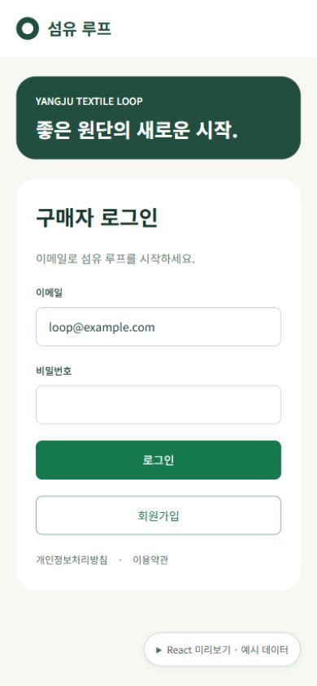
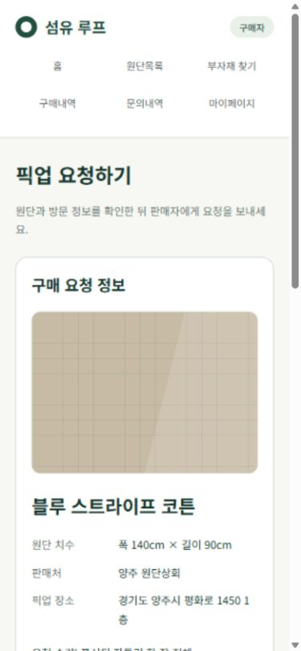
일부 안내 글자와 입력 예시의 색 대비가 약하다밝은 화면이나 작은 글자에서 입력 조건·상태를 읽기 어렵다. 특히 비밀번호 길이가 예시 글자에만 있으면 낮은 대비와 입력 후 사라지는 문제가 겹친다.
- 경로
- 회원가입 비밀번호 입력 예시, 공통 화면 설명.
- 관찰
- 실제 DOM의 비밀번호 placeholder는 #8e9a92/흰 배경으로 대비 약 2.92:1이다. 14px 공통 설명의 #68766f/#f7f8f4 조합은 약 4.47:1이다. CSS의 승인 대기 배지 조합 #9e6a19/#fff4d9는 약 4.24:1, 회색 배지 #67736a/#edf0ed는 약 4.32:1이다. 배지 수치는 CSS 토큰 계산이며 모든 배지 상태를 각각 DOM 측정한 것은 아니다.
- 영향
- 밝은 화면이나 작은 글자에서 입력 조건·상태를 읽기 어렵다. 특히 비밀번호 길이가 예시 글자에만 있으면 낮은 대비와 입력 후 사라지는 문제가 겹친다.
- 개선
- 전체의 녹색·아이보리 색감은 유지하고, 안내·placeholder·배지 글자 토큰을 각각 조정한다. 일반 크기 텍스트는 배경과 4.5:1 이상이 되도록 확인한다. 상태는 색 외에도 지금처럼 글자로 구분한다.
- 기준
- W3C Contrast (Minimum), W3C 기준 . 대비는 sRGB 상대 휘도 공식으로 계산했다. 비활성 버튼은 이 판정 대상에서 제외했고, 사이트 전체 접근성 인증 결과는 아니다.
- 증거
- mobile-320-signup.jpg, desktop-login.jpg; 실제 DOM 색상과 CSS 토큰.


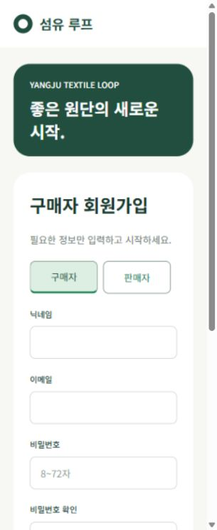
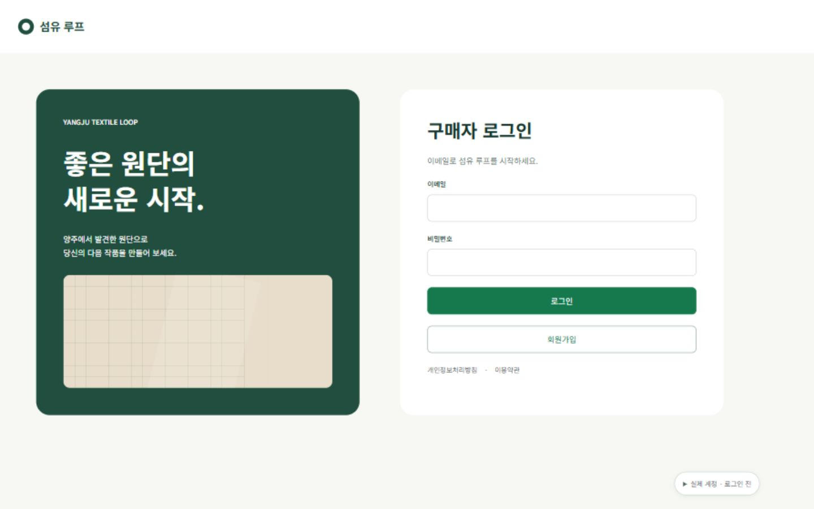
흰 카드 안의 입력란 경계가 흐리다입력 전에는 어디부터 어디까지 눌러 입력할 수 있는지 구분이 약하다. 라벨이 보이더라도 입력 영역의 시각적 경계는 희미하다.
- 경로
- 로그인·회원가입·등록 양식.
- 관찰
- 활성 입력란의 테두리 #cdd8d0와 흰 배경의 대비는 약 1.47:1이다. 흰 카드와 흰 입력란 사이에서 테두리가 입력 영역을 구별하는 주된 단서다. 포커스 상태의 녹색 외곽선은 별도로 제공된다.
- 영향
- 입력 전에는 어디부터 어디까지 눌러 입력할 수 있는지 구분이 약하다. 라벨이 보이더라도 입력 영역의 시각적 경계는 희미하다.
- 개선
- 활성 컨트롤을 식별하는 경계는 충분히 선명하게 하고 포커스·오류 상태를 유지한다. 장식용 카드 구분선까지 모두 진하게 바꿀 필요는 없다. 필수 식별 경계는 인접 색과 3:1 기준으로 점검한다.
- 기준
- W3C Non-text Contrast, W3C 기준 . 모든 장식 선에 3:1을 요구하는 것은 아니다.
- 증거
- desktop-login.jpg, mobile-320-signup.jpg; 실제 활성 입력의 계산 스타일 확인.
비밀번호를 확인할 수 없고 길이 조건도 입력하면 사라진다특히 휴대폰에서 오타를 확인하기 어렵고, 작성 중 비밀번호 조건을 다시 읽기 어렵다.
- 경로
/auth/buyer/login,/auth/buyer/signup; 판매자 공통 인증 양식.- 관찰
- 비밀번호와 확인 필드는 숨김 입력이며 표시/숨기기 버튼이 없다. 회원가입의 8~72자 안내는 placeholder에 있다.
- 영향
- 특히 휴대폰에서 오타를 확인하기 어렵고, 작성 중 비밀번호 조건을 다시 읽기 어렵다.
- 개선
- 접근 가능한 이름이 있는 ‘비밀번호 표시/숨기기’를 제공하고 길이 조건은 필드 아래에 계속 남긴다. 비밀번호 재설정 기능 확대와는 별개다.
- 증거
- mobile-signup-top.jpg, desktop-login.jpg; 실제 화면과 입력 DOM.

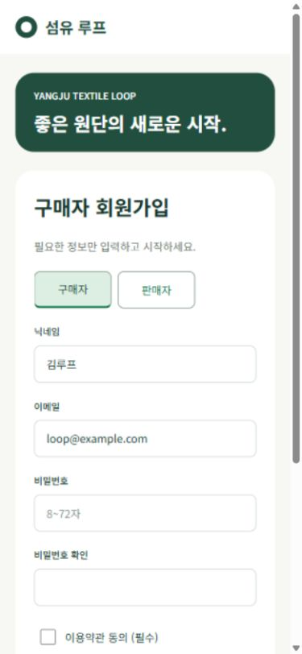
가입 동의 전에 약관과 개인정보 처리 내용을 열어볼 수 없다이용자는 무엇에 동의하는지 확인할 수 없는 상태에서 가입 여부를 결정해야 한다.
- 경로
/auth/buyer/signup,/auth/seller/signup의 공통 가입 양식.- 관찰
- 필수 동의 체크박스는 있지만 약관 내용을 여는 링크·버튼이 없다. 하단 ‘개인정보처리방침 · 이용약관’도 링크가 아닌 일반 문장이다. 실제 계정 모드의 빈 양식에서도 확인했으며 동의 체크나 가입 제출은 하지 않았다.
- 영향
- 이용자는 무엇에 동의하는지 확인할 수 없는 상태에서 가입 여부를 결정해야 한다.
- 개선
- 팀에서 확정한 약관·처리방침 내용을 ‘내용 보기’로 열고, 닫거나 돌아와도 입력값이 유지되게 한다. 동의 영역에 짧은 제목·필수 여부·내용 보기를 함께 배치한다.
- 구분
- 프론트 링크/표시 구현과 운영 측 문안 확정이 함께 필요하다. 이번 항목은 동의 UX의 문제이며 법적 적합성을 판정한 결과는 아니다.
- 증거
- mobile-signup-consent.jpg; 실제 화면의 링크 목록·DOM 확인.

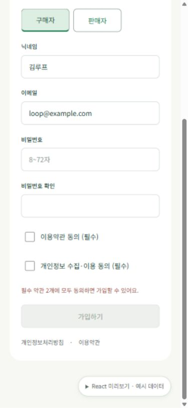
가입 화면에서 로그인으로 돌아가는 명확한 동선이 없다기존 계정이 있다는 사실을 가입 도중 떠올린 사람이 다시 시작하는 방법을 찾아야 한다.
- 경로
/auth/buyer/signup,/auth/seller/signup.- 관찰
- 구매자·판매자 가입 전환과 가입 버튼은 있지만 ‘이미 계정이 있나요? 로그인’ 또는 명시적 로그인 복귀가 없다. 브라우저 뒤로 가기에 의존한다.
- 영향
- 기존 계정이 있다는 사실을 가입 도중 떠올린 사람이 다시 시작하는 방법을 찾아야 한다.
- 개선
- 하단에 로그인 복귀를 제공하고 선택한 역할을 유지한다. 화면 내 이동이 있는 양식에서는 입력 초안 처리도 일관되게 한다.
공개 서비스의 첫 진입과 개발용 화면 모음을 분리할 필요가 있다일반 이용자가 이 주소로 들어오면 서비스 이용보다 역할·시연·화면 상태를 먼저 이해해야 한다.
- 경로
- 해시가 없는 첫 접속 →
/preview. - 관찰
- 기본 진입은 역할별 시연 시작·상태 예시가 있는 화면 모음이다. 실제 계정 모드에도 개발용 상태 안내가 보인다. 현재 개발 검토에는 유용하다.
- 영향
- 일반 이용자가 이 주소로 들어오면 서비스 이용보다 역할·시연·화면 상태를 먼저 이해해야 한다.
- 개선
- 공개할 때 소비자용 첫 화면을 정하고 개발용 모음·상태 도구는 별도 진입으로 구분한다. 검토 도구는 팀이 계속 쓸 수 있게 유지한다.
- 구분
- 현재 시연의 결함이 아니라 배포 전 정리 항목이다. 사업 데이터 API의 미연동 자체를 새 UX 결함으로 세지 않는다.
- 증거
- 실제 화면 모음 진입과 App.jsx의 기본 경로 확인.
글꼴 파일 크기는 모바일 첫 방문 성능 점검 대상이다캐시가 없는 모바일 접속에서는 글꼴 전송 비용이 클 가능성이 있다. 이번 검토에서 통신 제한을 걸어 지연 시간을 측정하지 않았으므로 ‘실제로 느렸다’고 단정하지 않는다.
- 경로
public/assets/fonts/NotoSansKR-VF.ttf, 공통 글꼴 선언.- 관찰
- 글꼴 파일은 10,415,532바이트(약 9.93MiB)이며 TTF 가변 글꼴을 사용한다. font-display: swap은 설정되어 있다.
- 영향
- 캐시가 없는 모바일 접속에서는 글꼴 전송 비용이 클 가능성이 있다. 이번 검토에서 통신 제한을 걸어 지연 시간을 측정하지 않았으므로 ‘실제로 느렸다’고 단정하지 않는다.
- 개선
- 차가운 캐시의 네트워크 측정 후 WOFF2·적절한 한글 서브셋·필요 굵기 범위를 검토한다. 브랜드 글꼴을 무조건 교체할 필요는 없다.
- 구분
- 파일·소스에 근거한 성능 검증 후보. 직접 재현한 화면 결함과 구분한다.
상단 메뉴와 소개 문구가 첫 화면을 많이 차지한다처음 방문한 소비자가 실제 원단을 보기 전에 메뉴와 비슷한 소개 문구를 먼저 지나야 한다. 매 화면에서 같은 높이를 반복해서 차지한다.
- 경로
/buyer/home, 구매자·판매자 공통 헤더.- 관찰
- 390×844에서 로고·역할 표시·6개 메뉴가 3열×2행으로 배치되어 헤더만 약 179px이다. 구매자 홈은 페이지 소개와 홍보 카드가 이어지고 첫 상품은 아래에 나타난다.
- 영향
- 처음 방문한 소비자가 실제 원단을 보기 전에 메뉴와 비슷한 소개 문구를 먼저 지나야 한다. 매 화면에서 같은 높이를 반복해서 차지한다.
- 개선
- 모바일 헤더와 주요 메뉴를 압축하고 나머지 메뉴도 쉽게 찾을 수 있게 한다. 홈 소개는 짧은 한 묶음으로 정리해 상품 탐색 시작점을 올린다. 메뉴 삭제나 새로운 하단 내비게이션을 반드시 추가하라는 의미는 아니다.


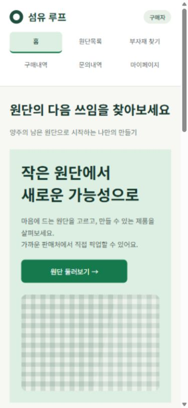
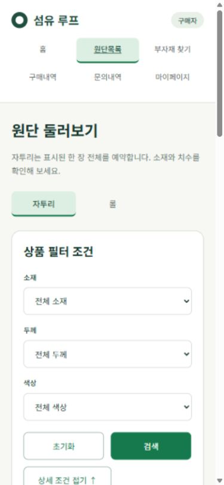
원단 목록 첫 화면에 원단이 보이지 않는다‘원단 목록’에 들어왔는데 상품을 먼저 볼 수 없다. 조건을 모르고 둘러보려는 소비자도 먼저 긴 검색 양식을 지나야 한다.
- 경로
/buyer/fabrics기본 목록.- 관찰
- 390×844, 스크롤 0에서 펼쳐진 필터 양식 높이가 약 480px이며 첫 상품 시작은 약 y953이다. 헤더·설명·판매 형태 탭·세 필터가 먼저 나온다.
- 영향
- ‘원단 목록’에 들어왔는데 상품을 먼저 볼 수 없다. 조건을 모르고 둘러보려는 소비자도 먼저 긴 검색 양식을 지나야 한다.
- 개선
- 모바일 초기 필터는 접거나 한 줄 요약으로 시작하고 선택 조건·결과 수와 상품을 먼저 보여준다. 필터를 접어도 상품 사진은 유지해야 한다.
- 함께 수정
- B04는 접거나 검색할 때 상품 이미지가 없어지는 별도의 동작 문제다. 필터 높이만 줄여서는 해결되지 않는다.
- 증거
- mobile-fabric-list.jpg, mobile-filter-collapsed.jpg; DOM 위치 측정.

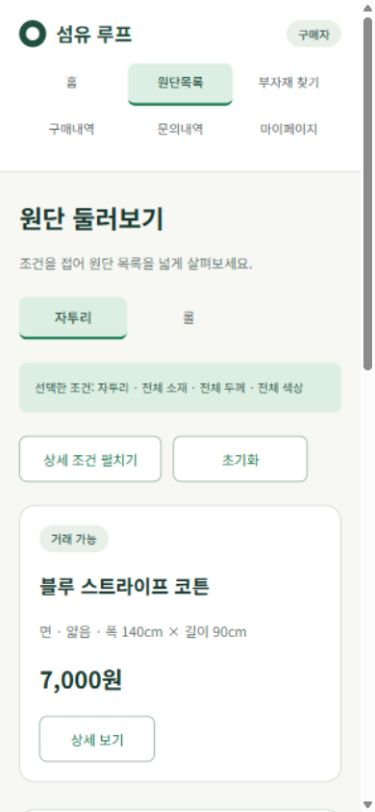
원단 상세에서 가격과 픽업 행동을 만나기까지 길다사진은 잘 보이지만 구매 여부를 결정하는 가격·단위·위치와 다음 행동을 함께 비교하기 어렵다.
- 경로
/buyer/fabrics/fabric-scrap-1.- 관찰
- 390×844에서 큰 사진 약 290px, 썸네일 약 84px, 반복되는 페이지 제목·상품 이름이 먼저 나온다. 가격은 첫 화면 아래이고 ‘픽업 요청하기’는 약 y1210이다.
- 영향
- 사진은 잘 보이지만 구매 여부를 결정하는 가격·단위·위치와 다음 행동을 함께 비교하기 어렵다.
- 개선
- 상품 이름 가까이에 가격·판매 단위·위치 요약을 배치하고 중복 제목·썸네일 높이를 줄인다. 필요하면 주요 행동을 하단에 유지하되 내용·오류·안전 영역을 가리지 않게 한다.
- 증거
- mobile-fabric-detail-top.jpg; 버튼 위치 DOM 측정.

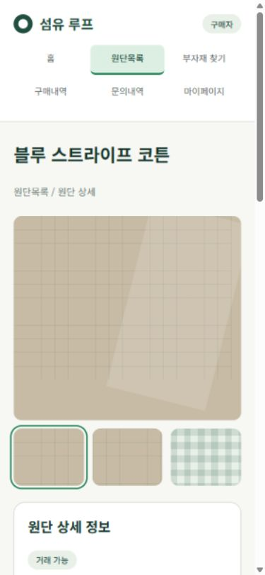
판매자 등록은 사진 영역이 길어 기본 입력 시작이 늦다이름·치수·가격을 빠르게 입력하기 어렵고, 사진과 입력 내용을 오갈 때 긴 왕복이 생긴다.
- 경로
/seller/register/manual?type=ROLL의 직접 등록 시연.- 관찰
- 390×844에서 첫 원단명 입력은 약 y1154, 전체 페이지는 약 2748px이다. 사진 확인은 y2426, 등록 내용 확인은 y2502 부근이다. 큰 사진 슬롯들이 기본 항목보다 앞에 이어진다.
- 영향
- 이름·치수·가격을 빠르게 입력하기 어렵고, 사진과 입력 내용을 오갈 때 긴 왕복이 생긴다.
- 개선
- 사진 선택 영역을 작은 미리보기와 선택 상태 중심으로 압축한다. 섹션 순서·진행 위치를 명확히 하고 검토 후 돌아오는 스크롤 위치를 보존한다. 필요한 경우 검토 행동을 가까이 유지한다.
- 함께 수정
- S04는 별도 사진 확인 화면에서 양식 처음으로 돌아오는 흐름 문제다. 모바일 높이 조정과 복귀 위치 보존을 한 묶음으로 작업한다.
- 증거
- mobile-seller-register-top.jpg; 전체 높이와 입력·버튼 위치 측정.

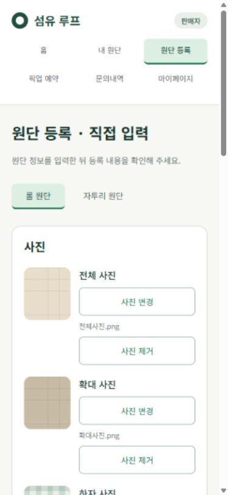
판매자 원단 표의 상태와 상세 버튼이 휴대폰 화면 밖에 있다판매자가 판매 상태를 확인하거나 수정할 원단을 여는 핵심 작업을 하려면 숨은 가로 스크롤을 알아내야 한다. 페이지 전체가 넘치지 않는 것만으로 사용성이 확보되지는 않는다.
- 경로
/seller/fabrics.- 관찰
- 390px 화면에서 표 컨테이너 너비는 약 293px, 내부 표 너비는 약 870px이다. 기본 위치에는 사진·이름 위주로 보이고 가격·상태·예약·상세보기가 오른쪽에 숨는다. 가로로 이동할 수 있다는 안내가 뚜렷하지 않다.
- 영향
- 판매자가 판매 상태를 확인하거나 수정할 원단을 여는 핵심 작업을 하려면 숨은 가로 스크롤을 알아내야 한다. 페이지 전체가 넘치지 않는 것만으로 사용성이 확보되지는 않는다.
- 개선
- 모바일에서는 이름·상태·핵심 수량·상세 버튼이 한 카드 안에 보이는 행으로 바꾼다. 표를 유지한다면 이름 고정, 가로 이동 안내, 핵심 행동의 접근성을 함께 설계한다.
- 증거
- mobile-seller-fabrics.jpg; 컨테이너 clientWidth와 scrollWidth 확인.

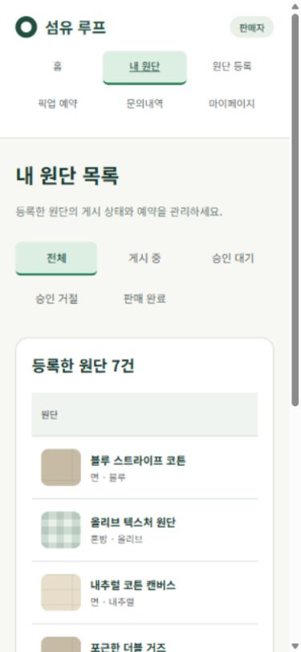
모바일 관리자 메뉴가 실제 처리 업무를 아래로 밀어낸다모바일 관리자는 메뉴·역할 표시·지표를 지나야 실제 대기 업무를 볼 수 있다. 반복 심사에 불필요한 스크롤이 많다.
- 경로
/admin/dashboard,/admin/approvals.- 관찰
- 390×844에서 데스크톱 사이드바가 위쪽으로 쌓이며 약 255px, 추가 상단 바까지 약 319px을 차지한다. 대시보드의 첫 처리 업무 제목은 약 y774이고 승인 화면의 처리 버튼은 약 y1491이다.
- 영향
- 모바일 관리자는 메뉴·역할 표시·지표를 지나야 실제 대기 업무를 볼 수 있다. 반복 심사에 불필요한 스크롤이 많다.
- 개선
- 모바일 관리 헤더는 주요 메뉴와 계정 동작을 간결하게 정리하고, 대기 업무를 통계보다 앞에 배치한다. 승인 검토 요약과 행동을 가까이 두되 오클릭 확인 단계는 유지한다.
- 구분
- 데스크톱 로그아웃 하단 정렬 문제는 재현되지 않았다. 모바일에서 메뉴가 차지하는 면적은 별도의 개선점이다.


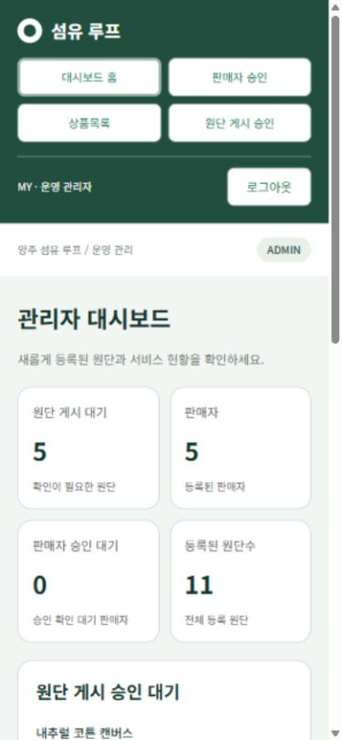
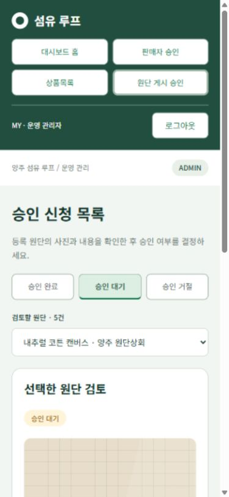
수락된 예약에서 방문 정보를 찾는 동선이 끊긴다실제 방문 직전에 필요한 장소를 예약에서 확인할 수 없다. 정상적인 다음 행동보다 취소가 더 잘 드러난다.
- 경로
/buyer/reservations?status=ACCEPTED&example=1&mode=demo,/buyer/reservations/demo-roll?status=ACCEPTED&example=1&fabric_id=fabric-roll-1.- 재현
- 구매자 화면 목록 → 수락됨 예약 예시 → 예약 취소 → 예약 유지. 취소 실행은 하지 않는다.
- 관찰
- 수락됨 카드의 유일한 동작이 빨간색 ‘예약 취소’다. 상품 이름도 링크가 아니고 상세 보기 동작이 없다. ‘예약 유지’를 통해 도달한 상세에는 날짜·수량·금액·재고만 있으며 판매처 이름, 픽업 주소, 판매자 문의 진입이 없다. ‘약속한 시간에 방문해 주세요’라는 안내만 있다.
- 영향
- 실제 방문 직전에 필요한 장소를 예약에서 확인할 수 없다. 정상적인 다음 행동보다 취소가 더 잘 드러난다.
- 제안
- 수락됨에도 ‘픽업 정보 보기’를 기본 동작으로 두고 상세에 판매처·주소·희망/확정 일정 및 이미 지원하는 문의 연결을 표시한다. 취소는 보조 동작으로 유지한다. 이력 주소를 새로 보장하는 것은 API 합의가 필요하므로 현재 조회 가능한 정보와 구분한다.
- 증거
- 직접 확인한 예약 목록/상세. buyer-reservation-accepted.jpg, buyer-reservation-detail.jpg.
BuyerPage.jsx의ReservationActions에서도 ACCEPTED에는 취소만 제공함을 보완 확인했다.


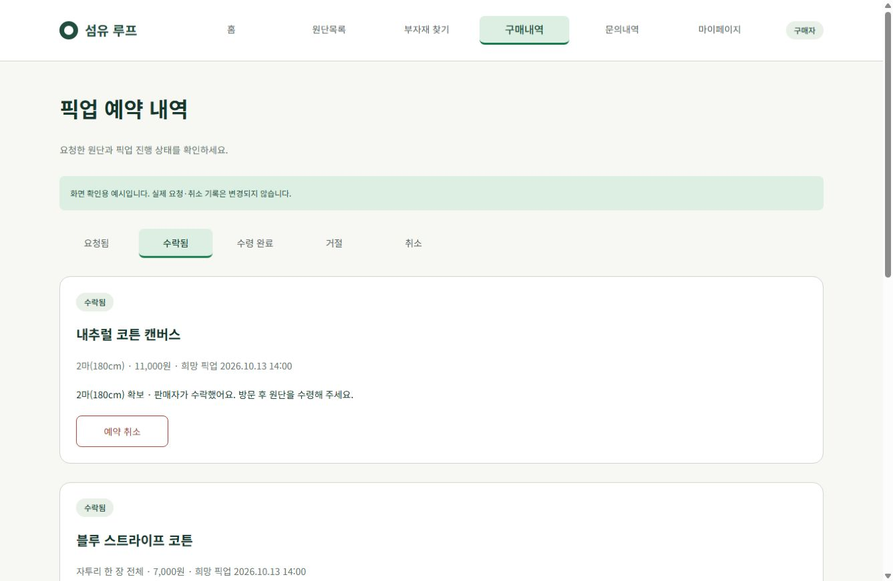
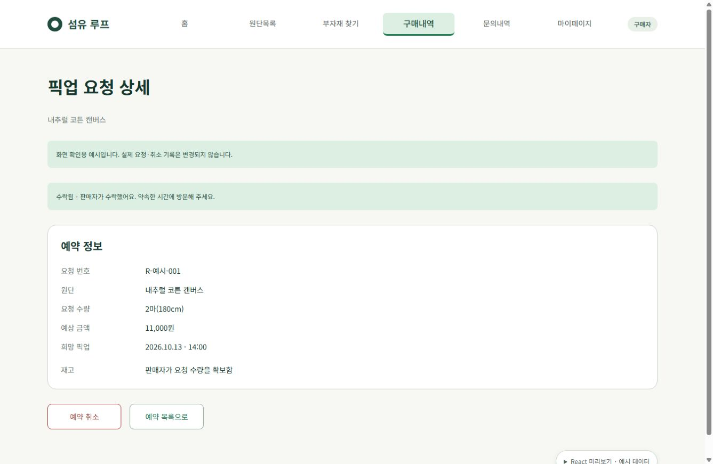
공개 문의 안내가 입력란·등록 버튼 아래에 있어 늦게 눈에 들어온다판매자에게 개인적으로 묻는 화면으로 이해하고 연락처 등 불필요한 정보를 먼저 입력할 수 있다. 공개 여부를 알게 되는 시점이 늦다.
- 경로
/buyer/inquiries?fabric_id=fabric-scrap-1&compose=1.- 재현
- 블루 스트라이프 코튼 상세 → 판매자 문의.
- 관찰
- ‘기본 공개 문의입니다. 다른 사용자에게도 문의 내용이 보여요’ 안내가 입력 카드와 ‘문의 등록’ 버튼 아래에 있다. 본문보다 작은 글씨의 연한 안내 상자다. 입력 필드 바로 옆에는 공개 여부가 없다.
- 영향
- 판매자에게 개인적으로 묻는 화면으로 이해하고 연락처 등 불필요한 정보를 먼저 입력할 수 있다. 공개 여부를 알게 되는 시점이 늦다.
- 제안
- 입력 제목 또는 입력 필드 위에 ‘공개 문의’와 ‘개인 연락처는 적지 마세요’를 짧게 표시한다. 공개/비공개 기능을 새로 추가할 필요는 없다.
- 증거
- 직접 확인. buyer-inquiry-public-notice.jpg.

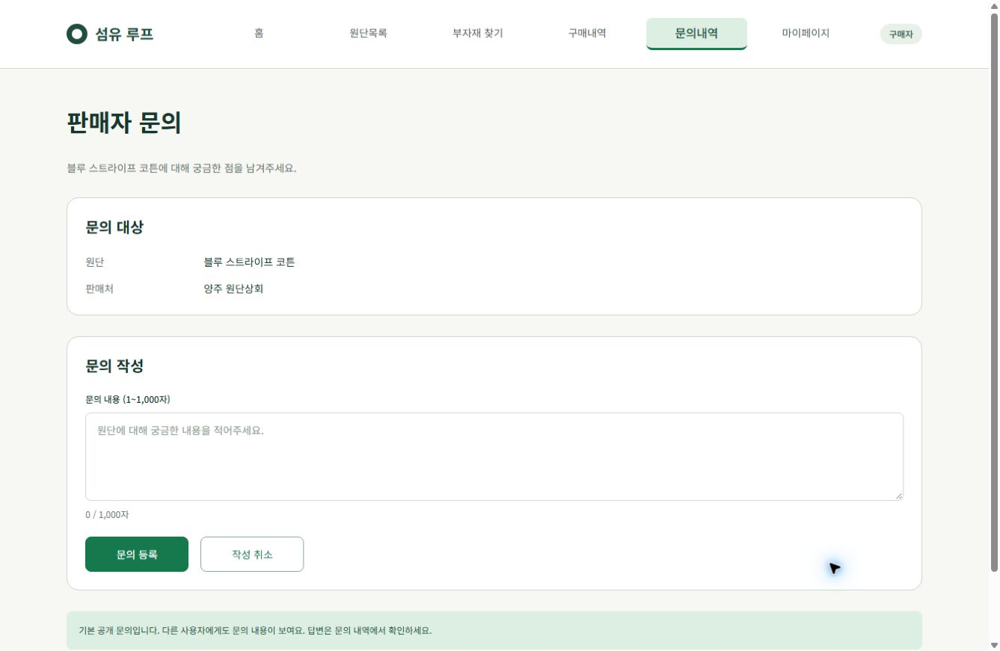
필터의 ‘선택 취소’가 기존 검색 조건까지 초기화한다‘취소’와 ‘조건 초기화’가 사실상 비슷한 결과가 된다. 수정만 포기하고 이전 탐색으로 돌아가려는 사용자가 조건을 다시 맞춰야 한다.
- 경로
/buyer/filters?sale_type=SCRAP&material=울&thickness=두꺼움&color=보라.- 재현
- 조건에 맞는 원단 없음 예시 → 조건 수정 → 아무것도 바꾸지 않고 선택 취소.
- 관찰
- 적용되어 있던 울/두꺼움/보라 검색 결과로 돌아가지 않고
sale_type=SCRAP만 남은 기본 목록으로 이동했다. 실제 화면에서 모든 셀렉트가 ‘전체’로 바뀌고 원단 4개가 표시됐다. - 영향
- ‘취소’와 ‘조건 초기화’가 사실상 비슷한 결과가 된다. 수정만 포기하고 이전 탐색으로 돌아가려는 사용자가 조건을 다시 맞춰야 한다.
- 제안
- 진입 시 적용된 검색 URL을 보관해 ‘선택 취소’로 그대로 복귀하고, 초기화는 별도 버튼의 의미로 유지한다.
- 증거
- 직접 클릭 확인. buyer-filter-edit.jpg; 취소 후 URL·셀렉트·원단 4개를 접근성 트리로 확인.
BuyerPage.jsx의 dedicated filter 취소 링크도 판매 형태만 보존한다.

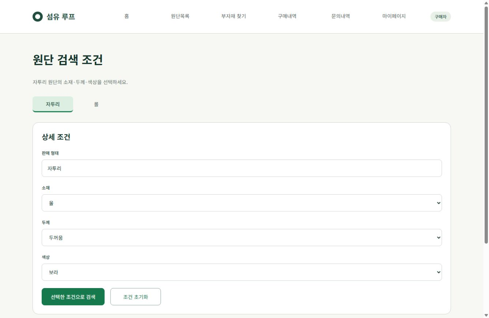
검색하면 같은 원단의 사진과 색상이 사라진다색감·무늬로 비교하는 원단 탐색에서 필터를 쓴 뒤 시각 정보가 줄어든다. 앞에서 봤던 원단인지 다시 상세를 열어 확인해야 한다.
- 경로
/buyer/fabrics→/buyer/fabrics?sale_type=SCRAP&material=면&thickness=얇음&color=블루&view=search.- 재현
- 자투리 목록에서 면·얇음·블루 선택 → 검색.
- 관찰
- 기본 목록에는 질감 이미지·설명·색상이 있지만 결과에서는 이미지와 설명, 색상 값이 빠진 텍스트 카드로 변한다. 1개 결과 카드는 화면 가로 전체를 차지하며 대부분이 빈 공간이다.
- 영향
- 색감·무늬로 비교하는 원단 탐색에서 필터를 쓴 뒤 시각 정보가 줄어든다. 앞에서 봤던 원단인지 다시 상세를 열어 확인해야 한다.
- 제안
- 검색/기본/접힌 목록에 같은 핵심 카드 구조를 사용한다. 접는 대상은 필터 영역으로 한정하고 썸네일·색상·치수·단가·상태를 유지한다.
- 증거
- 직접 확인. buyer-list.jpg, buyer-search.jpg.


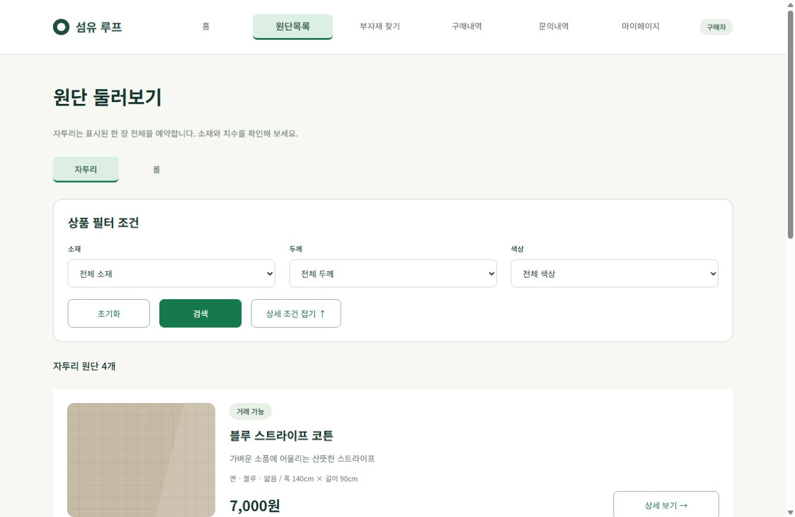
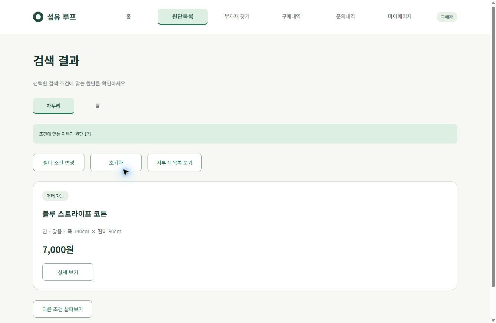
검색 결과에서 현재 적용 조건을 한눈에 확인할 수 없다무엇 때문에 결과가 줄었는지 기억해야 한다. 다시 검색하려는 동작이 중복되어 우선순위가 약하다.
- 경로
- B04의
view=search화면. - 재현
- 면·얇음·블루 검색 후 결과 화면 읽기.
- 관찰
- 상단은 ‘조건에 맞는 자투리 원단 1개’만 알려준다. 세부 적용 조건은 보이지 않는다. ‘필터 조건 변경’과 하단 ‘다른 조건 살펴보기’는 같은 수정 화면으로 이동하고, 초기화·자투리 목록 보기까지 비슷한 비중의 버튼이 늘어서 있다. 반면 결과 없음 화면에는 현재 조건 표가 있다.
- 영향
- 무엇 때문에 결과가 줄었는지 기억해야 한다. 다시 검색하려는 동작이 중복되어 우선순위가 약하다.
- 제안
- 결과 수 옆에 적용 조건을 짧은 요약/칩으로 보여주고 ‘조건 변경’과 ‘초기화’ 중심으로 동작을 정리한다. 정상 결과와 빈 결과의 조건 표시는 일관되게 한다.
- 증거
- 직접 확인. buyer-search.jpg; 빈 결과의 현재 조건 표는 접근성 트리·화면에서 별도 확인.
문의 답변을 읽은 뒤 해당 원단으로 이어지는 버튼이 없다구매 전 불확실성을 해소한 순간 다음 행동이 끊긴다. 질문과 답변이 여러 카드에 나뉘어 길게 펼쳐져 있을수록 동선 손실이 커진다.
- 경로
/buyer/inquiries?status=ANSWERED&example=1&mode=demo.- 재현
- 화면 목록 → 문의 내역 답변 완료 예시 → 상품·질문·답변 읽기.
- 관찰
- 상품 사진과 이름이 표시되지만 링크가 아니며, 답변 아래에도 ‘원단 보기’ 또는 ‘픽업 요청’이 없다. 구매를 이어가려면 상단 원단목록으로 가서 상품을 다시 찾아야 한다.
- 영향
- 구매 전 불확실성을 해소한 순간 다음 행동이 끊긴다. 질문과 답변이 여러 카드에 나뉘어 길게 펼쳐져 있을수록 동선 손실이 커진다.
- 제안
- 해당 원단이 아직 조회 가능하면 ‘원단 상세 보기’를 제공하고, 불가능하면 거래 종료 등 상태를 안내한다. 문의 화면에서 바로 구매 확정을 할 필요는 없다.
- 증거
- 직접 확인한 답변 완료 화면과 접근성 트리에 상품별 링크가 없음. buyer-inquiries-answered.jpg.

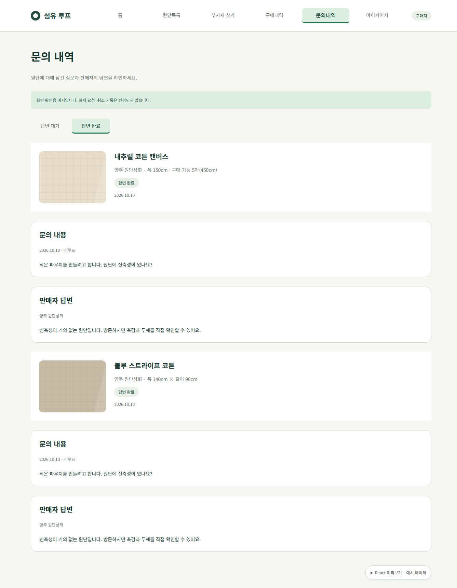
픽업 장소와 방문 안내를 요청 화면에 진입해야 알 수 있다직접 방문이 가능한지 판단하기 전에 원단을 고르고 요청 화면까지 들어가야 한다. 방문 가능한 지역이 구매 결정의 핵심인 서비스에서 정보 노출이 늦다.
- 경로
/buyer/fabrics/fabric-scrap-1→/buyer/pickup/fabric-scrap-1.- 재현
- 상세에서 판매처 정보 확인 → 픽업 요청하기.
- 관찰
- 원단 상세에는 ‘양주 원단상회 · 양주시’만 있다. 도로명 주소와 층, 휴무·방문 가능 시간은 픽업 입력 페이지에서 처음 보인다. 목록 카드에는 판매처/위치 정보 자체가 없다.
- 영향
- 직접 방문이 가능한지 판단하기 전에 원단을 고르고 요청 화면까지 들어가야 한다. 방문 가능한 지역이 구매 결정의 핵심인 서비스에서 정보 노출이 늦다.
- 제안
- 상세의 판매처 영역에 조회 가능한 주소·픽업 안내를 먼저 표시한다. 목록에는 제공 가능한 최소 위치 요약을 고려한다. 실제 지도 연동이나 거리 계산을 새로 요구하는 항목은 아니다.
- 증거
- 직접 확인. buyer-detail.jpg, buyer-pickup-top.jpg.


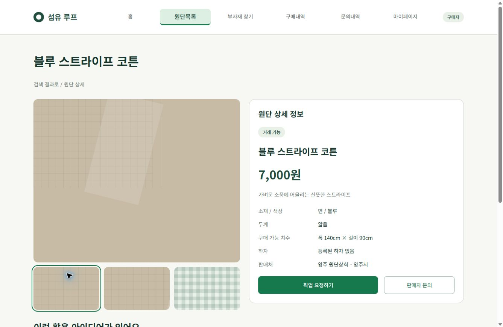
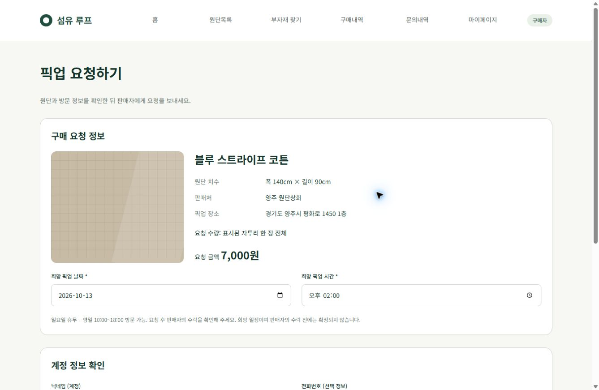
픽업의 중요한 운영 조건이 12px 한 줄에 섞여 있다일정 선택에 중요한 운영 시간과 거래 상태의 차이를 작은 보조 문장으로 읽어야 한다. 가격·상품명에 비해 중요 규칙이 잘 드러나지 않는다.
- 경로
/buyer/pickup/fabric-scrap-1.- 재현
- 희망 날짜·시간 바로 아래 안내 읽기.
- 관찰
- 휴무일, 방문 가능 시간, 수락 확인, 확정되지 않았다는 설명이 구분 없이 이어진다. DOM에서 글자 12px, 줄높이 20px, 색상
rgb(104,118,111)를 확인했다. ‘판매자 수락 전에는 확정되지 않음’이 두 안내 영역에서 반복된다. - 영향
- 일정 선택에 중요한 운영 시간과 거래 상태의 차이를 작은 보조 문장으로 읽어야 한다. 가격·상품명에 비해 중요 규칙이 잘 드러나지 않는다.
- 제안
- ‘방문 안내’와 ‘일정은 판매자 수락 후 확정’ 두 항목으로 분리하고 핵심 문구는 14~16px로 표시한다. 상세한 부연만 작은 글자로 둔다. 측정 없이 대비 기준 위반이라고 단정하지 않는다.
- 증거
- 직접 화면/DOM 계산 스타일 확인. buyer-pickup-top.jpg, buyer-pickup-bottom.jpg.

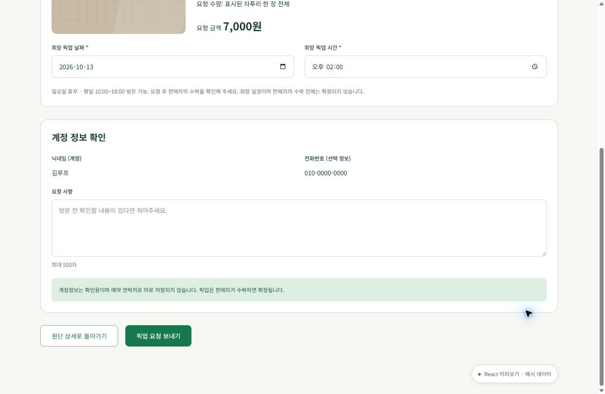
활용 아이디어 두 개와 공통 버튼의 대상이 불명확하다토트백에 관심이 있던 사용자도 어떤 도안을 고른 것인지 모른 채 파우치 화면으로 이동한다.
- 경로
/buyer/fabrics/fabric-roll-1하단 →/buyer/recommendations/fabric-roll-1.- 재현
- 지퍼 파우치·데일리 토트백 카드 확인 → 제작 조건 확인.
- 관찰
- 두 카드가 같은 무게로 놓여 있지만 개별 선택 동작은 없다. 아래 공통 ‘제작 조건 확인’과 ‘도안 미리보기’는 모두 지퍼 파우치에만 연결된다.
- 영향
- 토트백에 관심이 있던 사용자도 어떤 도안을 고른 것인지 모른 채 파우치 화면으로 이동한다.
- 제안
- 현재 지원하는 파우치 카드 안에 해당 CTA를 배치하거나 ‘지퍼 파우치 제작 조건’으로 이름을 명시한다. 토트백은 ‘활용 아이디어 예시’라는 현 범위를 더 분명히 표시한다. 도안 기능 확대를 전제로 하지 않는다.
- 증거
- 직접 클릭 확인. buyer-ideas.jpg; 다음 화면 제목 ‘지퍼 파우치 제작 조건’.

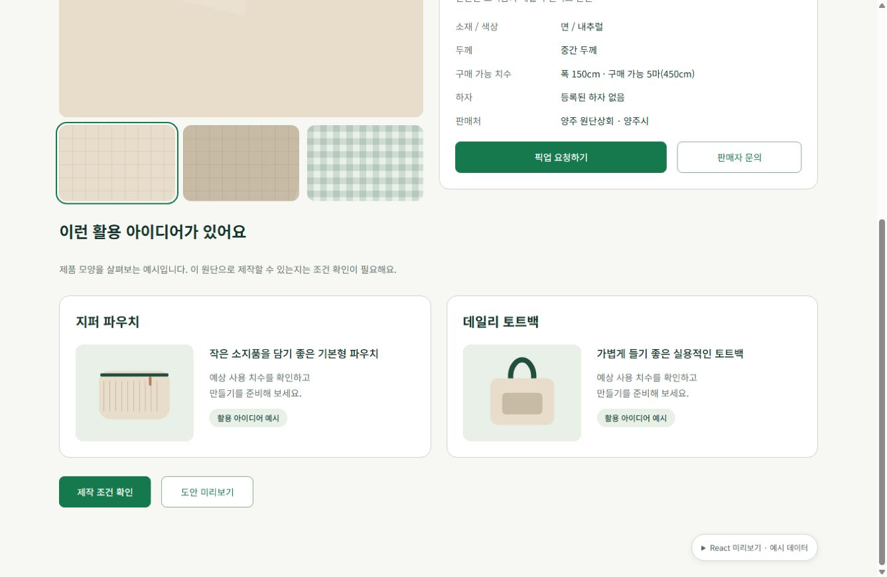
‘도안 미리보기’라는 이름에 비해 시각적 도안이 없다미리보기라는 이름에서 기대한 형태·재단 방향을 시각적으로 이해할 수 없다. 앞의 제작 조건과 비슷한 텍스트를 다시 읽게 된다.
- 경로
/buyer/patterns/pouch?fabric_id=fabric-roll-1.- 재현
- 제작 조건 → 도안 미리보기.
- 관찰
- 재단 부품 표와 재단 기준 설명만 있고 부품 모양이나 배치 그림이 없다. 실제 크기 출력/다운로드가 아니라는 설명은 하단에 있다.
- 영향
- 미리보기라는 이름에서 기대한 형태·재단 방향을 시각적으로 이해할 수 없다. 앞의 제작 조건과 비슷한 텍스트를 다시 읽게 된다.
- 제안
- 지금 범위라면 이름을 ‘재단 치수 확인’으로 맞추거나, 이미 고정된 치수만 설명하는 간단한 배치도를 함께 보여준다. 실제 출력·다운로드 기능은 별도 범위다.
- 증거
- 직접 확인. buyer-pattern.jpg.

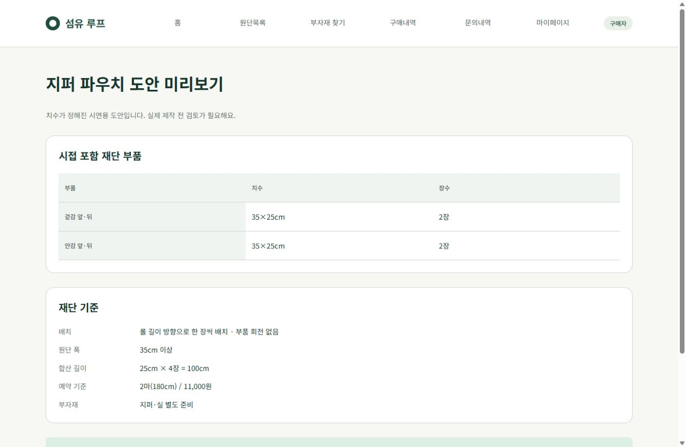
데스크톱 부자재 선택 때 비교 중인 목록 일부가 화면 밖으로 이동한다선택마다 화면 맥락이 움직여 비교가 번거롭다. 지도와 상세를 동시에 보는 큰 화면의 장점을 살리지 못한다.
- 경로
/buyer/supplies?from=…→selected=2&focus=selected.- 재현
- 도안 → 부자재 둘러보기 → 판매처 목록의 2번 선택.
- 관찰
- 선택한 상세로 즉시 스크롤·포커스 이동한다. 데스크톱에서도 지도 위쪽과 첫 판매처가 화면 위로 사라지고 헤더가 보이지 않는다. 선택 정보가 드러나는 장점은 있으나 다른 판매처와 연속 비교할 때 다시 위로 이동해야 한다.
- 영향
- 선택마다 화면 맥락이 움직여 비교가 번거롭다. 지도와 상세를 동시에 보는 큰 화면의 장점을 살리지 못한다.
- 제안
- 넓은 화면에서는 목록과 선택 상세를 함께 보이게 배치하거나, 상세가 이미 보이는 경우 스크롤을 생략한다. 작은 화면의 상세 포커스 안내는 유지한다.
- 증거
- 직접 클릭 확인. buyer-supplies-top.jpg, buyer-supplies-selected.jpg. 소스의 선택 시
scrollIntoView호출도 확인.


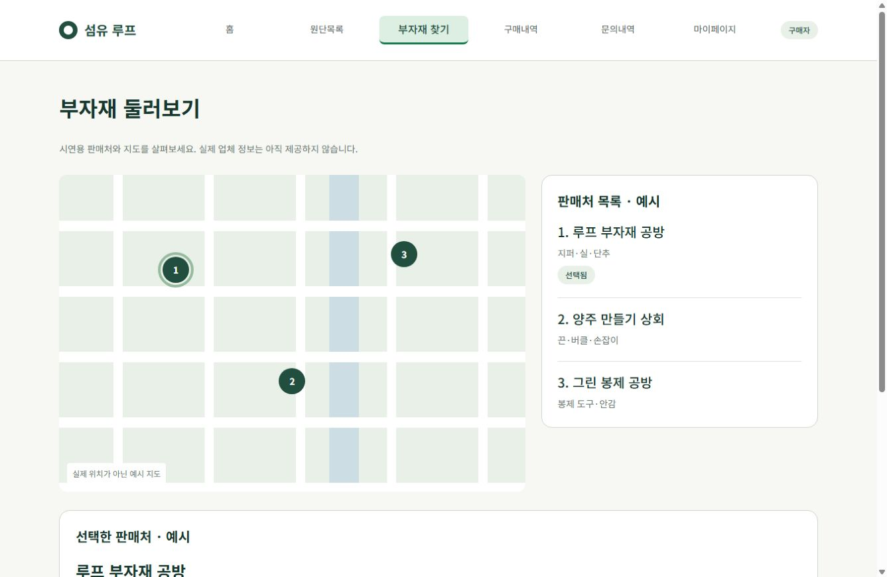
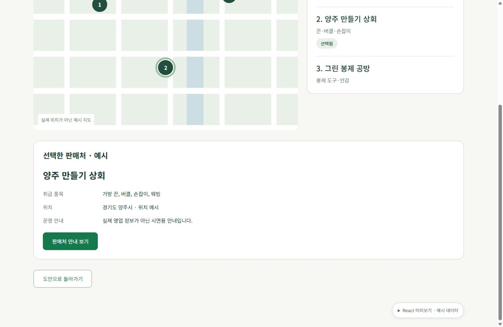
시연 이미지가 상품의 색상·무늬와 맞지 않아 화면 해석을 방해한다시연임을 알더라도 어떤 사진이 해당 상품을 나타내는지 혼란스럽고, 색상 필터와 상세의 일관성을 평가하기 어렵다.
- 경로
- 홈·자투리 목록·
/buyer/fabrics/fabric-scrap-1. - 재현
- 블루 스트라이프 코튼의 사진 영역과 소재/색상 설명 비교.
- 관찰
- 상품 이름/색상은 블루 스트라이프인데 주 이미지는 베이지 격자다. 상세 썸네일에는 서로 다른 색·질감(그린 체크 포함)이 같은 원단의 사진처럼 배치된다. 스크린리더 이름에는 ‘질감 예시’가 있으나 사진 위에는 예시라는 시각 표기가 없다.
- 영향
- 시연임을 알더라도 어떤 사진이 해당 상품을 나타내는지 혼란스럽고, 색상 필터와 상세의 일관성을 평가하기 어렵다.
- 제안
- 실제 사진이 준비되기 전에도 상품의 이름·색상과 맞는 임시 이미지를 사용하거나 사진에 ‘질감 예시’를 표시한다. 다른 종류의 원단을 동일 상품의 대체 사진처럼 보이지 않게 한다.
- 증거
- 직접 확인. buyer-detail.jpg, buyer-list.jpg. 실제 서버 사진 오류라고 주장하는 항목은 아니다.
문의 작성 중 상태 탭을 바꾸면 초안이 사라짐다른 답변을 확인하고 돌아오는 자연스러운 왕복에서 작성 내용을 다시 입력해야 한다.
- 경로
/seller/inquiries?scenario=123%3A4559&mode=demo.- 재현
- ‘답변 작성’에 문장 입력 → ‘답변 완료’ 탭 → ‘답변 대기’ 탭으로 복귀.
- 관찰
- 경고 없이 빈 입력란으로 돌아온다. 입력한 문장은 복구되지 않았다. 실제 시연으로 재현했다.
- 영향
- 다른 답변을 확인하고 돌아오는 자연스러운 왕복에서 작성 내용을 다시 입력해야 한다.
- 개선
- 문의 ID별 미전송 초안을 메모리에 유지하고 성공적으로 등록한 뒤에만 지우기. 초안을 유지하지 않는다면 이동 시 이탈 안내가 필요하다.
- 증거
- 브라우저 입력값
찬물로 단독 세탁해 주세요. 제작 전에 작은 조각으로 수축 정도를 먼저 확인해 주세요.→ 복귀 후 접근성 트리 입력값 없음. seller-inquiry-draft-lost.jpg는 복귀 상태.

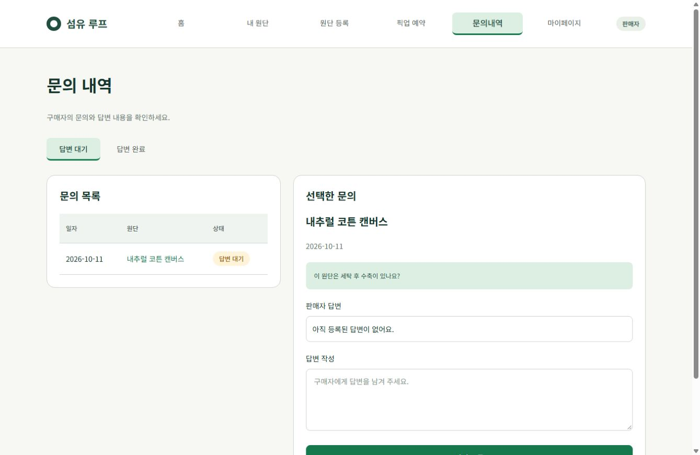
답변 등록일이 UTC ISO 문자열 그대로 노출됨한국 이용자는 읽기 어렵고 현지 시간과 9시간 차이가 나서 등록 시점을 오해할 수 있다.
- 경로
/seller/inquiries/answered?id=inquiry-scenario.- 재현
- 답변을 작성해 ‘답변 등록’ 클릭 → 완료 화면의 ‘등록일’ 확인.
- 관찰
2026-10-11T14:49:17.955Z처럼 밀리초·T·Z가 포함된다. 같은 화면 문의 날짜는2026-10-11이다.- 영향
- 한국 이용자는 읽기 어렵고 현지 시간과 9시간 차이가 나서 등록 시점을 오해할 수 있다.
- 개선
- 한국 표준시를 기준으로
2026.10.11 23:49처럼 표시하고 사이트의 날짜 형식을 통일한다.

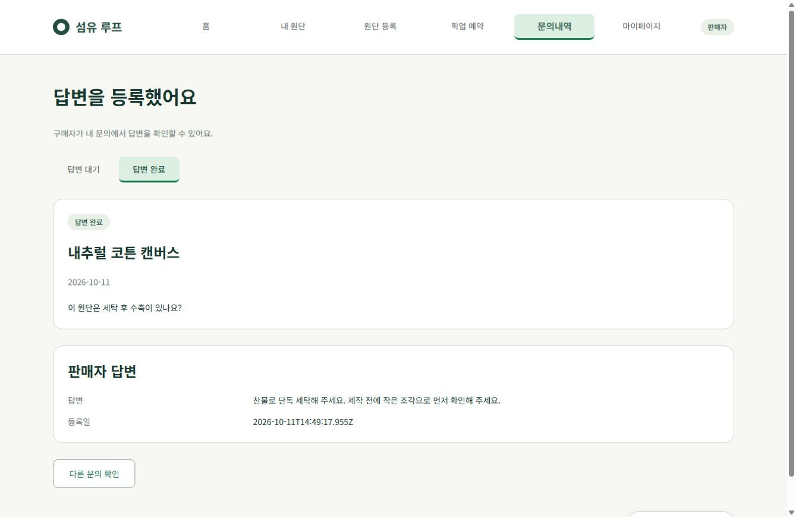
AI 화면의 ‘+ 사진 추가’가 전체 직접 입력 화면으로 이동함AI 작업을 포기하거나 처음부터 다시 입력해야 하는 것처럼 느끼고, 현재 초안이 유지되는지도 확신하기 어렵다.
- 경로
/seller/register/ai?type=ROLL→/seller/register/manual?type=ROLL.- 재현
- AI 대화의 오른쪽 ‘정리된 등록 항목’ 아래 ‘+ 사진 추가’ 클릭.
- 관찰
- 사진 선택이나 사진 전용 영역이 열리는 대신 ‘원단 등록 · 직접 입력’ 전체 양식으로 전환된다. AI 결과 화면의 ‘사진 추가’와 ‘항목 직접 수정’도 같은 입력 화면을 목적지로 표시한다.
- 영향
- AI 작업을 포기하거나 처음부터 다시 입력해야 하는 것처럼 느끼고, 현재 초안이 유지되는지도 확신하기 어렵다.
- 개선
- 현재 동작을 유지한다면 ‘사진 추가·내용 보완’처럼 목적지를 예고하고, 이동한 화면에서 ‘AI 초안을 불러왔어요’ 안내와 사진 영역 포커스를 제공한다. 사진 전용 보완 단계도 대안이다.
- 증거
- 직접 클릭 후 제목·URL 전환 확인. seller-ai.jpg.

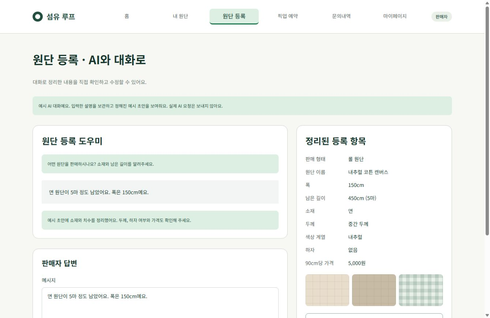
별도 사진 확인 화면의 유일한 다음 행동이 긴 양식으로 돌아가기임최종 확인에 가까워진 사용자가 되돌아간 느낌을 받고 같은 폼을 다시 훑는다. 어떤 사진을 확인한 것인지도 부족하다.
- 경로
/seller/register/manual?type=ROLL→/seller/register/photos?type=ROLL.- 재현
- 직접 입력 하단 ‘선택한 사진 확인’ → ‘입력 화면으로 돌아가기’.
- 관찰
- 선택한 사진 2장이라는 문구와 한 장의 넓은 예시 이미지가 보인다. ‘등록 내용 확인’으로 진행할 수 없고 입력 폼으로만 돌아갈 수 있다. 복귀 시
scrollY=0, 폼 문서 높이 약 2362px로 하단 버튼을 다시 찾아야 한다. - 영향
- 최종 확인에 가까워진 사용자가 되돌아간 느낌을 받고 같은 폼을 다시 훑는다. 어떤 사진을 확인한 것인지도 부족하다.
- 개선
- 사진별 용도·선택 상태를 보여주고 최종 등록 검토로 계속 진행할 수 있게 한다. 또는 사진 확인을 현재 폼 안에서 열어 스크롤 위치를 유지한다.

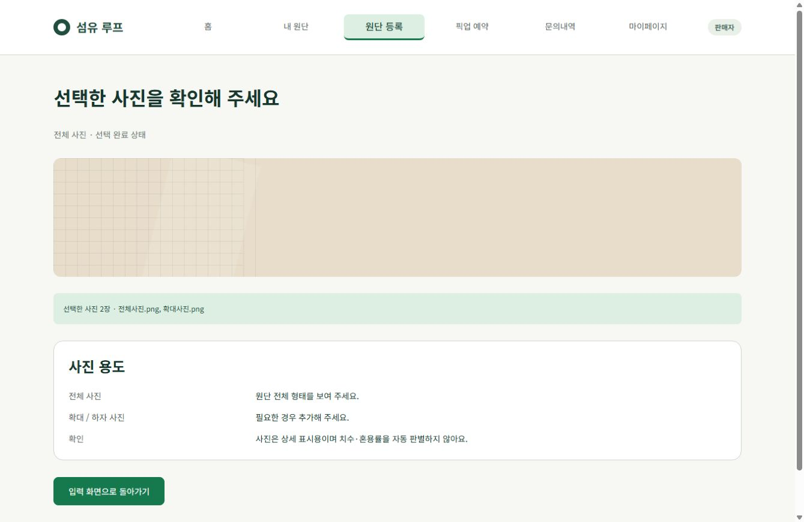
미선택 사진 슬롯과 선택된 슬롯의 큰 이미지 표현이 같음빠르게 훑으면 3장이 모두 등록된 것처럼 오인할 수 있다.
- 경로
/seller/register/manual?type=ROLL.- 재현
- 사진이 2장 선택된 예시 또는 AI에서 사진 추가를 눌러 사진이 없는 입력 상태 확인.
- 관찰
- 하자 사진이 선택되지 않았어도 커다란 원단 질감 이미지가 채워져 있다. 선택 여부는 아래 작은 ‘선택한 사진 없음 · 위 이미지는 예시’와 버튼 문구로만 구분된다. 최종 검토에도 미선택 하자 사진 예시가 나타난다.
- 영향
- 빠르게 훑으면 3장이 모두 등록된 것처럼 오인할 수 있다.
- 개선
- 미선택 슬롯은 빈 업로드 상태, 선택된 슬롯은 선택 상태로 명확히 구분한다. 실제 이미지 연동 전 예시를 유지하더라도 ‘예시’ 표시는 이미지 위에 명확히 두고, 미선택 예시는 최종 검토에서 제외한다.
- 제한
- 실제 파일 업로드를 하지 않았으므로 실제 파일 미리보기 동작 자체에 대한 결함 판정은 아니다.

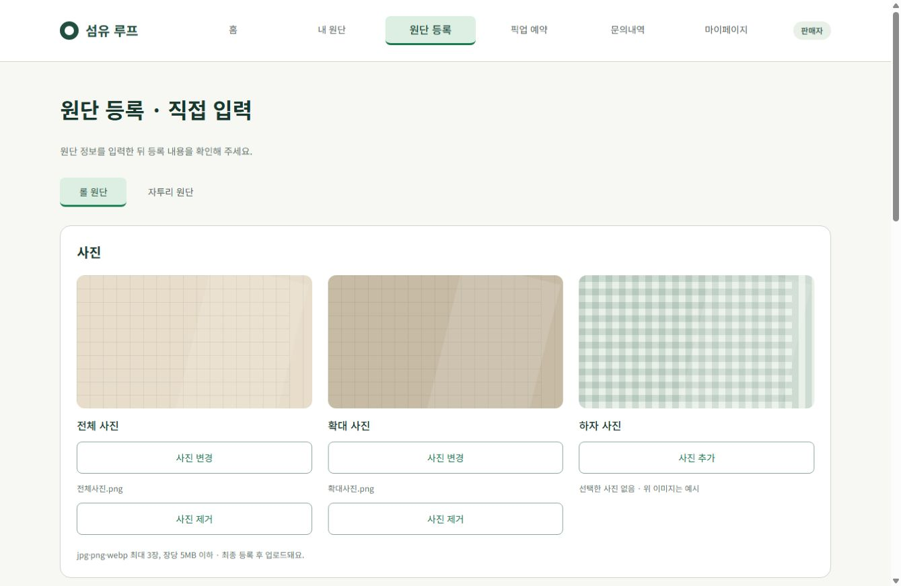
부분 업로드 실패 화면에 실패한 사진이나 완료 개수가 없음사용자가 무엇을 복구하는지 알기 어렵고, 목록 확인으로 떠나도 되는지 판단하기 어렵다.
- 경로
/seller/upload?scenario=210%3A8628&mode=demo.- 재현
- 상태 목록의 ‘일부 사진 업로드 실패’ 예시 진입 → 안내 확인 → 재시도.
- 관찰
- ‘일부 사진’, ‘이미 올라간 사진’이라는 안내와 재시도 버튼만 있다. 어떤 원단의 몇 장 중 무엇이 실패했는지 표시되지 않는다. 재시도는 정상 완료됐다.
- 영향
- 사용자가 무엇을 복구하는지 알기 어렵고, 목록 확인으로 떠나도 되는지 판단하기 어렵다.
- 개선
- 대상 원단명과 사진별 파일명/용도·성공/실패 상태, 예를 들어 ‘2장 중 1장 완료’를 표시한다. 기존의 ‘새 원단을 만들지 않고 실패 사진만 재시도’ 정책은 유지한다.

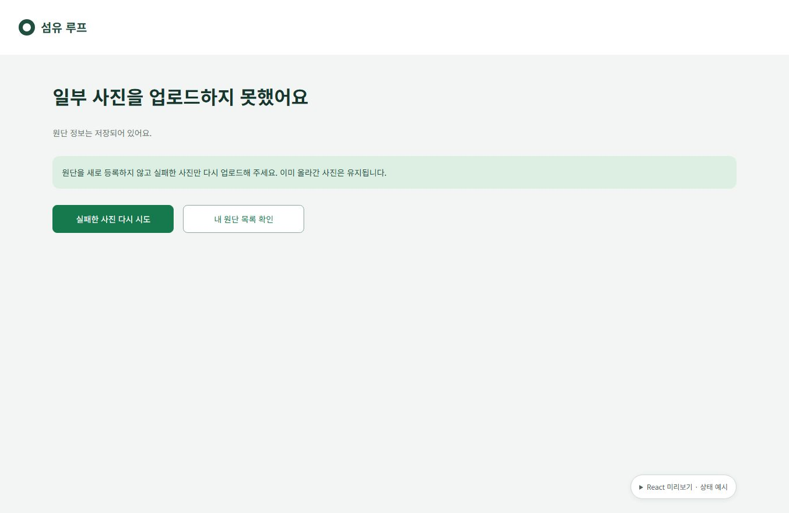
선택 날짜의 강조와 결과 제목 표시가 없다잠시 시선을 옮기거나 다른 날과 비교하면 현재 조회 중인 날짜를 알기 어렵다.
- 경로
/seller/calendar?month=2026-10&date=2026-10-15.- 재현
- 예약 수락 후 홈 → 월별 픽업 일정 보기 → 예약 없는 15일 클릭 → 아래 결과 확인.
- 관찰
- 날짜 클릭으로 목록은 필터링되지만 선택 셀의 지속적인 강조가 없다. 결과는 ‘10월 선택한 날짜에는 등록된 픽업 일정이 없어요.’로 표시되며 ‘15일’은 없다.
- 영향
- 잠시 시선을 옮기거나 다른 날과 비교하면 현재 조회 중인 날짜를 알기 어렵다.
- 개선
- 선택 셀에 색/테두리와 접근성 선택 상태를 유지하고 ‘10월 15일 · 픽업 0건’처럼 구체적인 제목을 표시한다. 날짜 클릭 시 페이지 최상단으로 돌아가지 않도록 현재 달력 위치도 유지하는 편이 좋다.

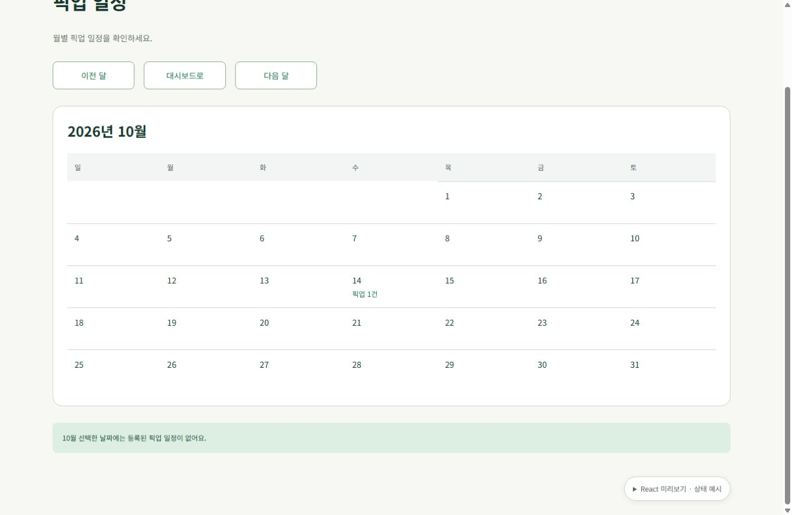
두 픽업 달력의 주 시작 요일이 다름같은 날짜의 위치가 한 칸 이동하여 두 화면을 오갈 때 재확인이 필요하다.
- 경로
/seller/dashboard→ ‘월별 픽업 일정 보기’ →/seller/calendar?month=2026-10.- 관찰
- 대시보드는
월 화 수 목 금 토 일, 월별 화면은일 월 화 수 목 금 토이다. - 영향
- 같은 날짜의 위치가 한 칸 이동하여 두 화면을 오갈 때 재확인이 필요하다.
- 개선
- 서비스 전체에서 하나의 주 시작 요일로 통일한다.
- 증거
- 두 화면의 요일 행 직접 확인. seller-dashboard.jpg, S07 달력 이미지.

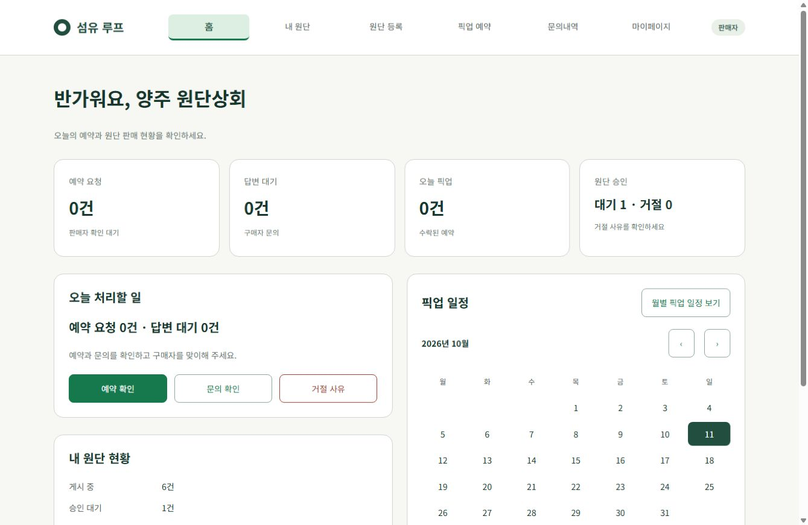
프로필의 전체 저장 버튼이 매장 카드 안에 있어 저장 범위가 모호함닉네임 수정 후 어떤 버튼으로 저장해야 하는지, 우측 버튼이 계정 정보까지 저장하는지 확신하기 어렵다.
- 경로
/seller/profile.- 재현
- 마이페이지의 왼쪽 계정 정보와 오른쪽 매장/픽업 정보를 함께 확인.
- 관찰
- 닉네임·연락처는 왼쪽 카드, ‘변경 사항 저장’은 오른쪽 매장 카드 내부 하단에만 있다. 왼쪽에는 ‘판매자 승인 상태 확인’ 버튼이 있어 시각적으로 카드별 동작처럼 보인다.
- 영향
- 닉네임 수정 후 어떤 버튼으로 저장해야 하는지, 우측 버튼이 계정 정보까지 저장하는지 확신하기 어렵다.
- 개선
- 두 카드를 감싸는 공통 하단 저장 영역에 버튼을 두고 ‘계정·매장 변경 사항 저장’으로 범위를 명확히 하거나, 실제 저장 단위에 맞춰 각 섹션을 분리한다.

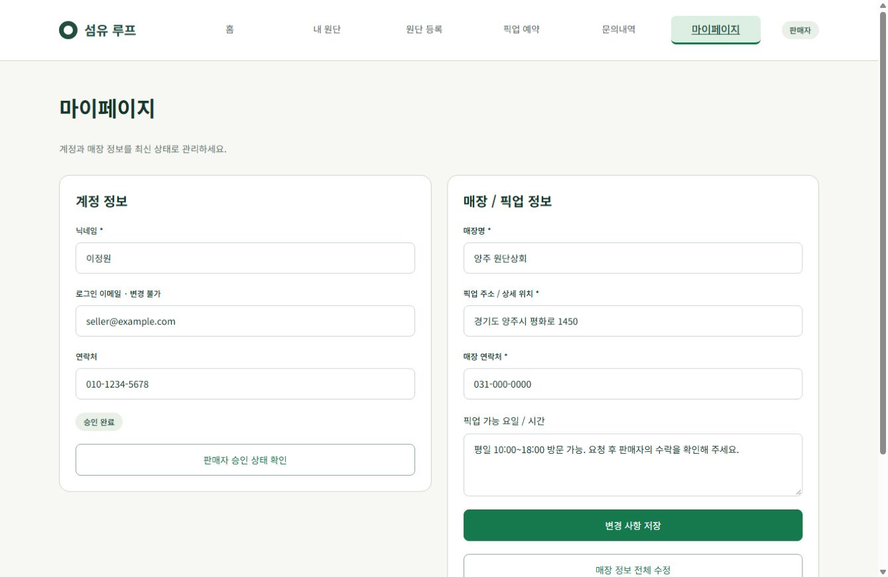
판매자 승인 거절 상태에서 다음 해결 경로가 불명확함이용자가 기다려야 하는지, 매장 정보를 바꿔야 하는지, 어디에 문의해야 하는지 알 수 없어 반복 새로고침으로 이어질 수 있다.
- 경로
/seller/approval?scenario=209%3A8167&mode=demo.- 재현
- 상태 목록 → 판매자 승인 거절.
- 관찰
- ‘재신청 기능은 제공하지 않으며 운영팀이 승인하면 등록할 수 있어요’라고 안내하고, ‘매장 정보 확인’과 ‘승인 상태 다시 확인’만 제공한다. 운영팀에 어떻게 확인을 요청해야 하는지는 없다.
- 영향
- 이용자가 기다려야 하는지, 매장 정보를 바꿔야 하는지, 어디에 문의해야 하는지 알 수 없어 반복 새로고침으로 이어질 수 있다.
- 개선
- 운영팀과 합의된 문의/검토 절차를 먼저 정한 뒤 안내한다. 아직 없는 재신청 API나 자동 처리 시간을 약속해서는 안 된다. 기능 구현의 부재를 강조하기보다 사용자가 할 수 있는 행동을 설명한다.
- 구분
- 프론트 문구만 바꾸기 전에 운영 정책 합의가 필요한 항목이다.

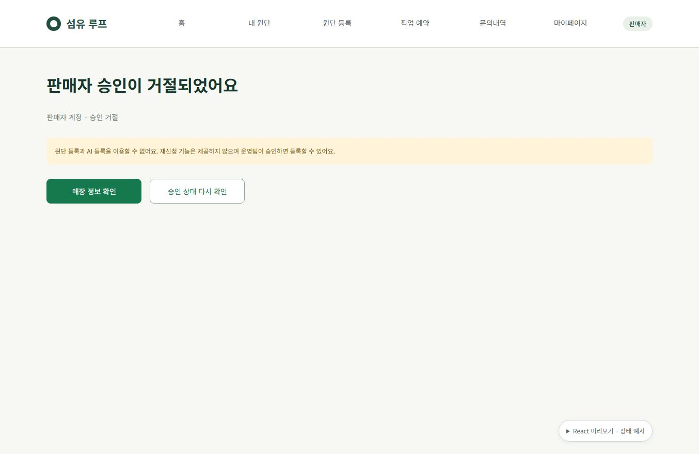
예약 최종 확인에 처리 후 재고 변화가 한눈에 드러나지 않음처리의 영향을 머릿속으로 계산해야 하고, 요약 확인보다 앞 화면 정보가 반복되는 느낌이 강하다.
- 경로
/seller/reservations?status=REQUESTED&scenario=123%3A4387&mode=demo→ 수락 →/seller/reservations/confirm?id=reservation-scenario&action=ACCEPTED.- 관찰
- 요청 180cm, 현재 남은 450cm, 확보 0cm, 판매 가능 450cm를 반복해서 보여주고 ‘요청 수량이 확보된다’고 설명한다. 수락 후 판매 가능 길이 270cm는 처리 전 화면에 보이지 않는다. 확인 버튼은 881px viewport 아래쪽에 걸려 추가 스크롤이 필요했다.
- 영향
- 처리의 영향을 머릿속으로 계산해야 하고, 요약 확인보다 앞 화면 정보가 반복되는 느낌이 강하다.
- 개선
- ‘판매 가능 450→270cm / 예약 확보 0→180cm / 실물 잔량 450cm 유지’처럼 처리 전후의 핵심 변화에 우선순위를 둔다. 요청 요약을 간결하게 묶고 확정 버튼을 가깝게 둔다.
- 증거
- seller-reservation-confirm.jpg; 수락 후 실제 UI에서 270cm 표시 확인.

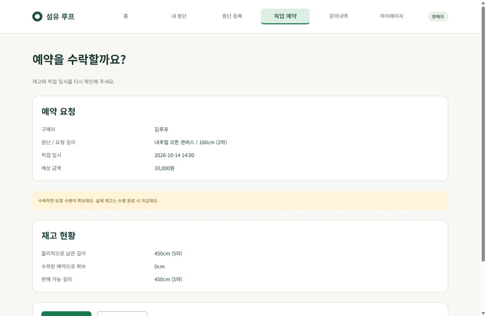
거절 건수가 0이어도 대시보드에서 거절 확인을 강조함조치할 오류가 있는 것처럼 보이며 실제로 할 일인 승인 대기 확인보다 시선을 끈다.
- 경로
/seller/dashboard?scenario=123%3A2473&mode=demo.- 관찰
- 원단 승인 카드가 ‘대기 1 · 거절 0’인데 ‘거절 사유를 확인하세요’가 고정 표시된다. 오늘 처리할 일에도 빨간 테두리 ‘거절 사유’ 버튼이 있다.
- 영향
- 조치할 오류가 있는 것처럼 보이며 실제로 할 일인 승인 대기 확인보다 시선을 끈다.
- 개선
- 거절이 있을 때만 사유 확인 안내를 강조한다. 0건일 때는 현재 대기 상태 또는 정상 상태에 맞춘 보조 문구를 표시한다.
이미 등록된 매장 수정 화면에도 신규 가입용 문구가 남음기존 정보 수정인지 최초 등록 준비인지 맥락이 불분명해진다. ‘나중에 입력’이 수정 내용을 보류 저장하는 것처럼 해석될 수도 있다.
- 경로
/seller/profile→ ‘매장 정보 전체 수정’ →/seller/store.- 관찰
- 승인 완료·매장 등록 완료인 상태에서도 ‘운영팀의 판매자 승인이 완료되면 원단을 등록할 수 있어요’가 표시된다. 뒤로 이동 버튼은 ‘나중에 입력’이다.
- 영향
- 기존 정보 수정인지 최초 등록 준비인지 맥락이 불분명해진다. ‘나중에 입력’이 수정 내용을 보류 저장하는 것처럼 해석될 수도 있다.
- 개선
- 최초 등록이면 현재 안내를 쓰고, 기존 수정이면 ‘수정 취소/마이페이지로’ 등 현재 맥락에 맞춰 제목·보조 문구·복귀 목적지를 바꾼다.
- 증거
- 기존 승인 완료 계정의 매장 수정 화면에서 직접 확인.
원단 승인 신청 완료 화면에 주 행동의 위계가 없음완료 후 어디로 이어가는 것이 기본 경로인지 판단이 필요하다.
- 경로
/seller/upload의 DONE 상태.- 관찰
- ‘승인 대기 목록’, ‘메인으로’, ‘다른 원단 등록’이 모두 같은 흰색 테두리 버튼이다. 앞 단계는 주 행동을 진한 초록색으로 구분한다.
- 영향
- 완료 후 어디로 이어가는 것이 기본 경로인지 판단이 필요하다.
- 개선
- 가장 권장하는 다음 행동 하나(예: 승인 대기 목록)를 주 버튼으로 두고 나머지는 보조 행동으로 유지한다.

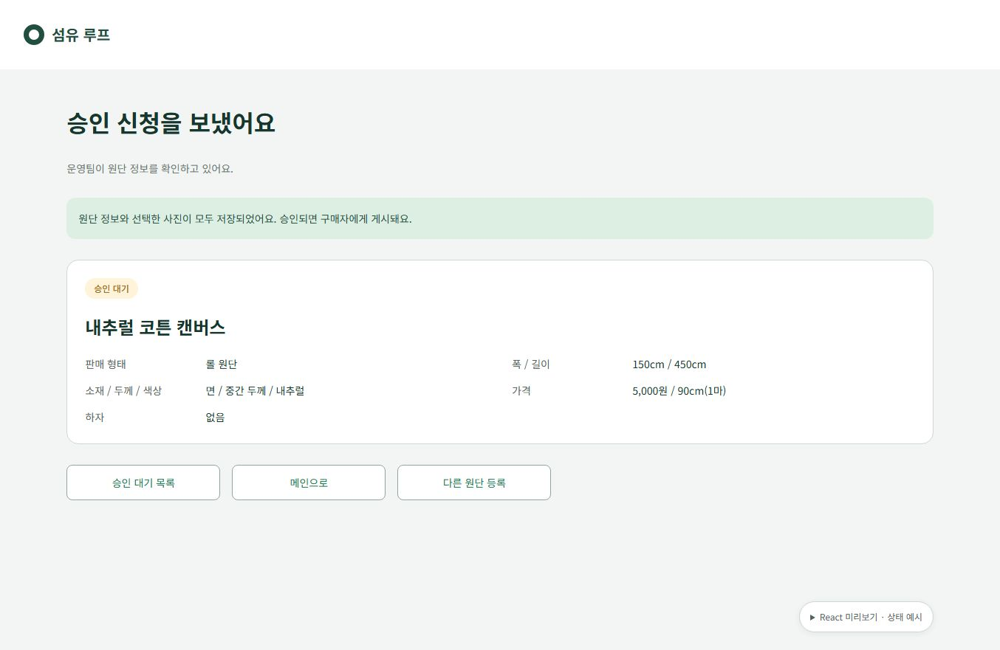
전체 원단 지표가 승인 대기 목록으로 연결됨카드의 11건 중 나머지 원단이 어디 있는지 알기 어렵고 지표와 목록을 불일치로 받아들일 수 있다.
- 경로/재현
/admin/dashboard?scenario=123%3A4955&mode=demo→ 등록된 원단수 11 / 전체 등록 원단 카드 클릭.- 직접 관찰
/admin/fabrics?status=PENDING의 승인 대기 · 5건이 열렸다. 상태 선택에는 승인 대기·게시 중·승인 거절·판매 완료만 있고 전체 항목은 없었다.- 이용자 영향
- 카드의 11건 중 나머지 원단이 어디 있는지 알기 어렵고 지표와 목록을 불일치로 받아들일 수 있다.
- 개선
- 전체를 보여줄 화면이 준비되어 있으면 연결하고, 현재 상태별 목록만 제공한다면 카드의 링크·설명을 실제 목적지에 맞춘다. 이 관찰만으로 새 전체 조회 API를 필수라고 단정하지 않는다.
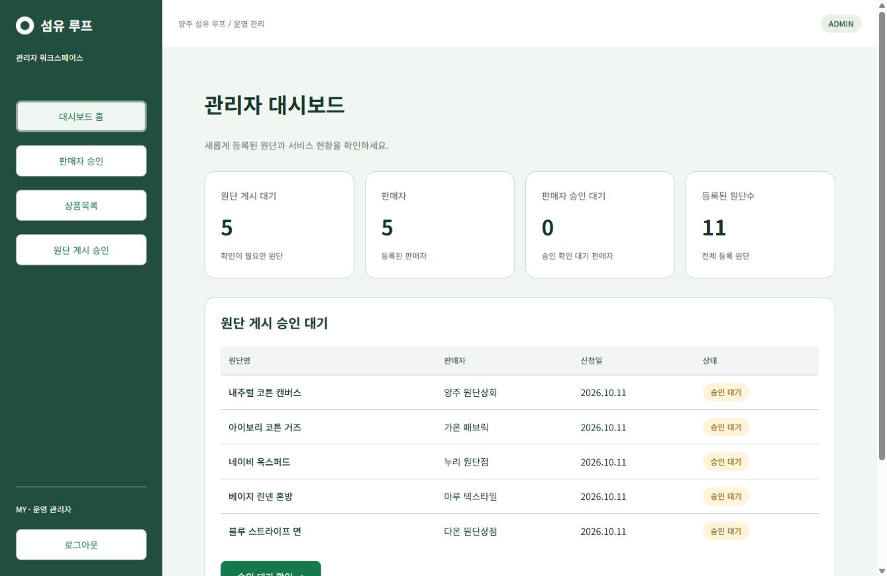
판매자 승인·거절이 한 번의 클릭으로 즉시 확정됨계정 권한을 바꾸는 버튼의 오클릭을 확정 전에 발견할 기회가 없다. 시연에서 실제 피해가 발생한 것은 아니다.
- 경로/재현
/admin/sellers/seller-1?scenario=123%3A5272&mode=demo→ 판매자 승인. 새 격리 시나리오에서 같은 상세 → 판매자 승인 거절.- 직접 관찰
- 확인 단계 없이 각각 판매자 승인 완료, 승인 거절 상태로 즉시 변경되었다. 승인 후에는 처리 버튼이 사라졌다. 원단 게시 승인에는 별도의 최종 확인 화면이 있었다.
- 이용자 영향
- 계정 권한을 바꾸는 버튼의 오클릭을 확정 전에 발견할 기회가 없다. 시연에서 실제 피해가 발생한 것은 아니다.
- 개선
- 닉네임·매장명·처리 결과를 보여주는 짧은 최종 확인을 넣고, 확정과 취소를 구분한다. 거절 사유 수집은 현재 계약과 팀 정책을 확인한 뒤 별도로 결정한다.

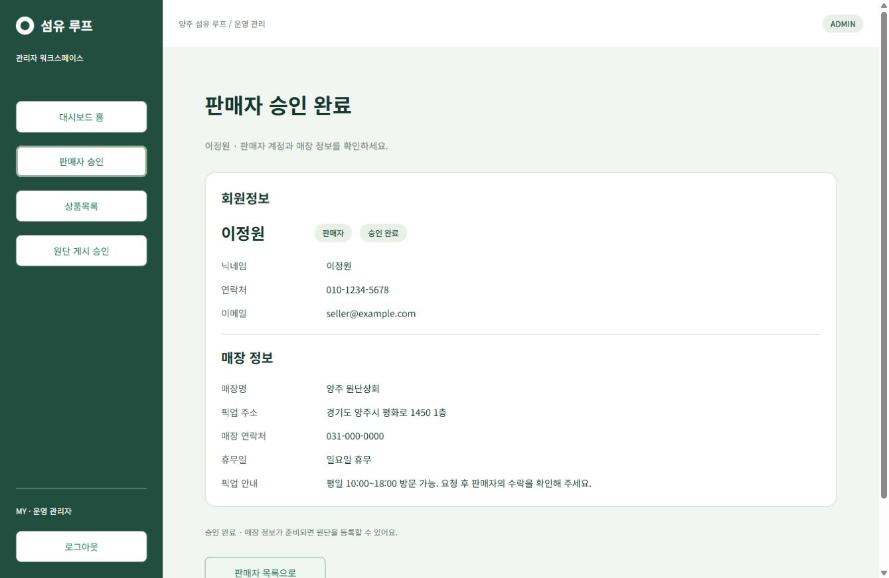
원단 확인 화면의 ‘검토 화면으로’가 직전 작업 목록을 복구하지 않음확인만 취소했는데 처리하던 목록과 선택 맥락을 잃는다. 반복 심사에서는 다시 메뉴·대상을 찾아야 한다.
- 경로/재현
/admin/approvals?id=fabric-pending-2의 좌측 목록·우측 검토 화면 → 게시글 승인 →/admin/fabrics/fabric-pending-2?action=approve→ 검토 화면으로.- 직접 관찰
- 원래의 나란한 목록·검토 화면 대신
/admin/fabrics/fabric-pending-2단독 상세가 열렸다. 사이드바 선택도 원단 게시 승인에서 상품목록으로 바뀌었다. - 이용자 영향
- 확인만 취소했는데 처리하던 목록과 선택 맥락을 잃는다. 반복 심사에서는 다시 메뉴·대상을 찾아야 한다.
- 개선
- 진입한 목록 경로·상태·선택 항목을 기억해 복귀시킨다. 단독 상세에서 들어온 경우에는 현재 복귀 방식이 적절하다.
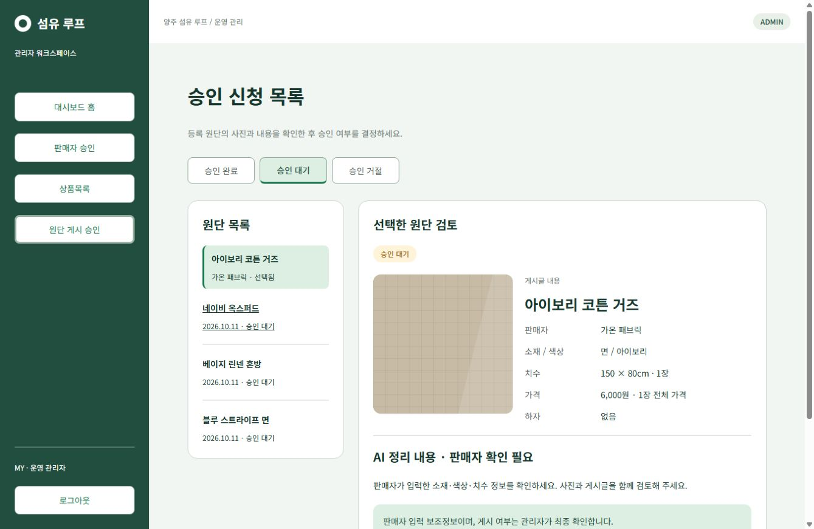
게시 결과 미리보기가 구매자 화면으로 전환되며 관리자 복귀 수단이 없음관리 중이던 맥락과 역할이 바뀐 것처럼 보여 혼란스럽다. 브라우저 뒤로 가기에 의존하게 된다.
- 경로/재현
- 원단 승인 완료
/admin/fabrics/fabric-pending-2?result=POSTED→ 게시된 원단 확인. - 직접 관찰
/buyer/fabrics/fabric-pending-2가 열리고 구매자 상단 메뉴·구매자 역할 표시·픽업 요청·판매자 문의 버튼이 나타났다. 화면 안에는 관리자 검토로 돌아가기 버튼이 없었다.- 이용자 영향
- 관리 중이던 맥락과 역할이 바뀐 것처럼 보여 혼란스럽다. 브라우저 뒤로 가기에 의존하게 된다.
- 개선
- 관리자용 미리보기임을 표시하고 명시적 복귀 버튼을 둔다. 별도 탭 또는 관리자 셸 안 미리보기도 가능하다. 검토 중에는 거래 행동을 숨기는 편이 명확하다.
- 한계
- 격리 시연의 셸 전환을 확인한 것이며, 실제 서버 권한 우회가 재현된 것은 아니다.

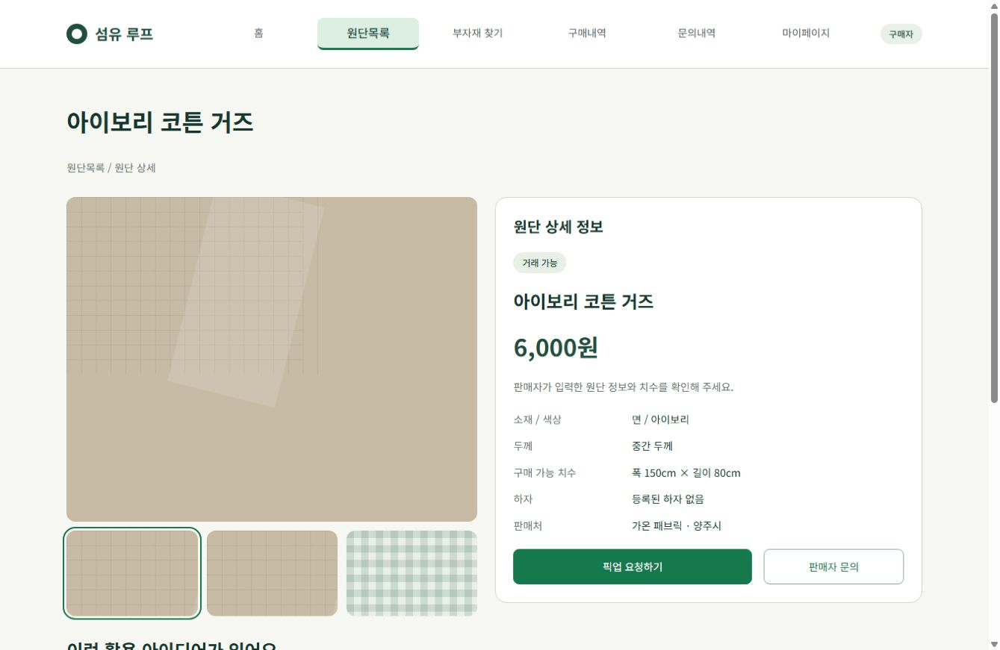
관리자 사진 검토에 확대·다른 사진 탐색 수단이 보이지 않음실제 원단의 하자·조직·색상을 심사할 때 필요한 근거를 충분히 확인하기 어려울 수 있다. 현재 시연의 대체 이미지 자체를 결함으로 판정한 것은 아니다.
- 경로/재현
/admin/fabrics/fabric-pending-1단독 상세 및/admin/approvals?id=fabric-pending-2검토 화면.- 직접 관찰
- 각각 큰 단일 이미지 영역만 보였고 전체·상세·하자 사진을 넘기거나 확대하는 버튼이 없었다. 게시 후 구매자 화면에는 이미지 선택 버튼 3개가 있었다.
- 이용자 영향(운영 상황 추론)
- 실제 원단의 하자·조직·색상을 심사할 때 필요한 근거를 충분히 확인하기 어려울 수 있다. 현재 시연의 대체 이미지 자체를 결함으로 판정한 것은 아니다.
- 개선
- 실제 이미지 API 연결 전 관리자에게도 전체·상세·하자 사진 구분, 선택, 확대 보기를 제공한다. 사진이 없을 때는 없음을 명시한다.
판매자 목록에서 매장을 식별할 정보가 부족함이름이 비슷하거나 동일한 판매자가 있으면 매번 상세를 열어 매장을 확인해야 한다. 대기 업무량도 한눈에 파악하기 어렵다.
- 경로/재현
/admin/sellers?scenario=123%3A5138&mode=demo의 승인 대기 목록.- 직접 관찰
- 표에는 닉네임, 승인 상태, 상세보기만 있었다. 상세에는 매장명과 이메일이 있지만 목록에는 없었다. 시각적으로는 전체 판매자 5명만 보여 현재 대기 결과 1명과 구분하기 어려웠다.
- 이용자 영향(다건 운영 추론)
- 이름이 비슷하거나 동일한 판매자가 있으면 매번 상세를 열어 매장을 확인해야 한다. 대기 업무량도 한눈에 파악하기 어렵다.
- 개선
- 현재 데이터가 제공하는 매장명과 짧은 계정 식별 정보를 목록에 함께 보여주고, 선택된 탭의 결과 건수를 표시한다. 제공되지 않는 신청 날짜 등은 별도 계약 확인 대상이다.

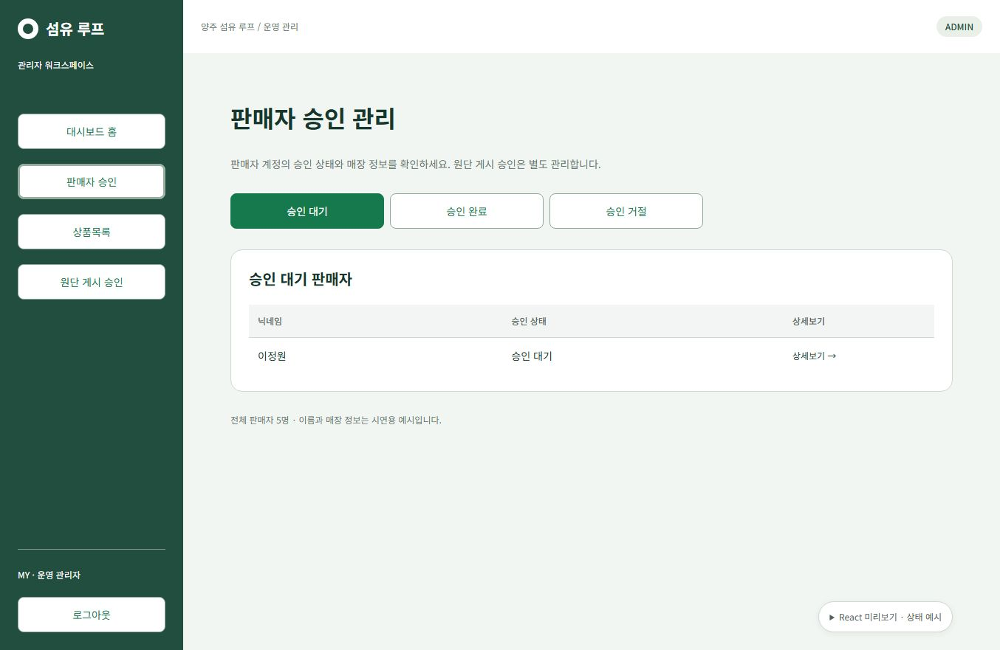
확정 단계에서 대상 정보가 길게 반복되어 핵심 입력과 버튼이 아래로 밀림검토를 마치고 확정하려는 단계에서 다시 긴 내용을 지나야 한다. 특히 거절 사유 작성이라는 주 작업이 바로 보이지 않는다.
- 경로/재현
- 원단 상세 → 게시 승인 거절, 또는 검토 화면 → 게시글 승인.
- 직접 관찰
- 거절 화면은 원단명·판매자·치수·예약 길이·가능 길이 등 9개 정보를 먼저 반복했다. 881px 높이에서 거절 사유 영역 시작이 약 859px로 첫 화면 아래에 걸렸다. 승인 확정 화면도 대상 정보 반복 뒤에 최종 버튼이 배치되었다.
- 이용자 영향
- 검토를 마치고 확정하려는 단계에서 다시 긴 내용을 지나야 한다. 특히 거절 사유 작성이라는 주 작업이 바로 보이지 않는다.
- 개선
- 최종 단계에서는 원단명·판매자·사진 등 짧은 대상 요약과 효과만 기본 노출하고, 전체 정보는 펼치기로 제공한다. 거절 입력과 최종 행동을 더 앞에 배치한다.
거절 결과 카드가 같은 내용을 두 번 보여 다음 업무를 밀어냄결과 확인에 필요한 정보량보다 화면이 길어 다음 원단을 처리할 때 불필요한 스크롤이 생긴다.
- 경로/재현
/admin/fabrics/fabric-pending-1?action=reject에서 사유 입력 → 거절 확정 →?result=REJECTED.- 직접 관찰
- 처리 결과 카드와 갱신된 거절 내역 · 방금 처리한 원단 카드가 원단명·판매자·상태·거절 사유를 반복했다. 남은 승인 대기 · 4건은 두 카드 아래에 있었다.
- 이용자 영향
- 결과 확인에 필요한 정보량보다 화면이 길어 다음 원단을 처리할 때 불필요한 스크롤이 생긴다.
- 개선
- 결과를 한 카드로 합치고, ‘다음 대기 원단 검토’와 남은 건수를 가까이 둔다. 전체 거절 목록 링크는 보조 행동으로 남긴다.

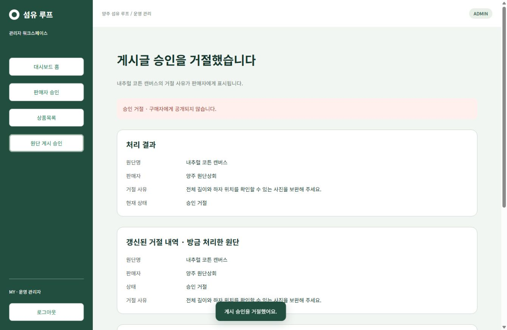
단일 필터의 화면 점유와 별도 필터 페이지가 중복됨목록보다 필터가 많은 공간을 차지한다. 같은 작업에 두 방식이 있어 별도 페이지가 필요한 이유를 알기 어렵다.
- 경로/재현
/admin/fabrics?status=PENDING에서 상태 드롭다운으로 게시 중 선택 → 목록 아래 상태별 조회 클릭 →/admin/fabrics/filter.- 직접 관찰
- 목록 상단은 상태 드롭다운 하나를 약 174px 높이의 별도 패널에 배치했다. 첫 원단 행은 약 600px 부근부터 시작했다. 하단 링크는 같은 네 상태의 링크를 나열하는 별도 페이지를 열었으며, 방금 보던 ‘게시 중’ 맥락은 표시되지 않았다.
- 이용자 영향
- 목록보다 필터가 많은 공간을 차지한다. 같은 작업에 두 방식이 있어 별도 페이지가 필요한 이유를 알기 어렵다.
- 개선
- 상태 필터를 목록 제목과 한 줄에 정리하고 중복 진입을 줄인다. 별도 상태 허브를 유지한다면 현재 상태·복귀를 명시한다.

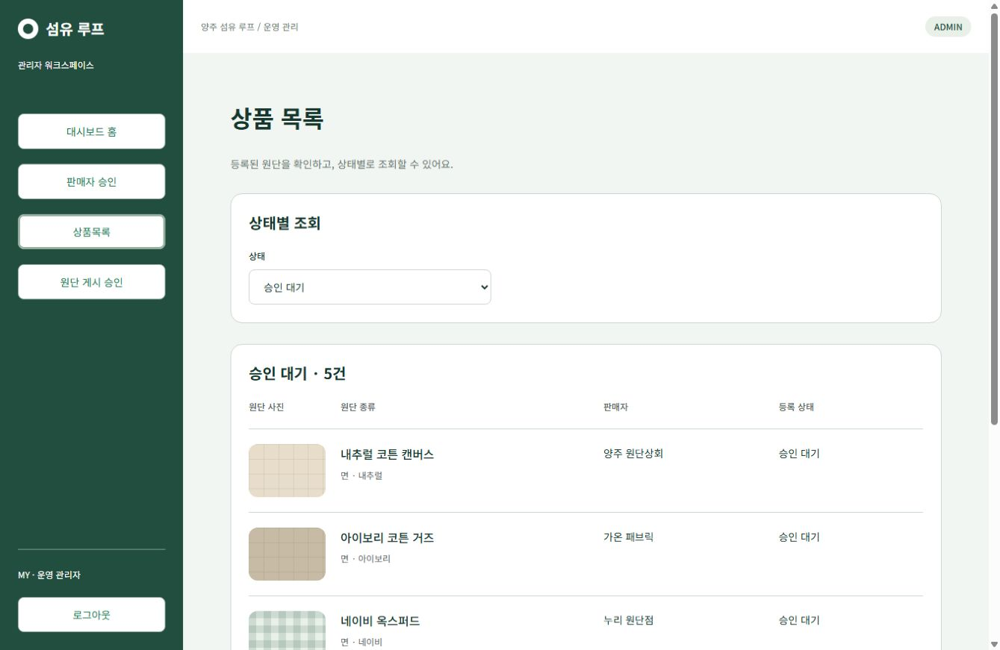
두 승인 업무의 탭 순서와 선택 스타일이 다름비슷한 승인 업무를 오갈 때 같은 위치가 같은 상태를 뜻하지 않는다. 반복 작업에서 상태를 매번 다시 읽어야 한다.
- 경로/재현
/admin/sellers와/admin/approvals를 차례로 확인.- 직접 관찰
- 판매자 탭은 승인 대기 → 승인 완료 → 승인 거절, 선택 탭은 진한 녹색 채움이었다. 원단 탭은 승인 완료 → 승인 대기 → 승인 거절, 선택 탭은 옅은 배경과 밑줄이었다.
- 이용자 영향
- 비슷한 승인 업무를 오갈 때 같은 위치가 같은 상태를 뜻하지 않는다. 반복 작업에서 상태를 매번 다시 읽어야 한다.
- 개선
- 상태 순서를 대기 우선으로 맞추고 선택 표현을 통일한다. 판매자와 원단이라는 업무 구분은 제목·메뉴로 유지한다.
‘판매자 확인 필요’ 문구가 관리자 최종 승인 시점과 맞물려 모호함판매자 확인이 아직 끝나지 않았는데 승인해도 되는지, 현재 내용이 AI 생성인지 관리자가 판단하기 어렵다. 실제 AI 생성 이력이나 확인 여부는 이번 UI 검토에서 검증하지 않았다.
- 경로/재현
/admin/approvals?id=fabric-pending-2의 검토 영역 아래.- 직접 관찰
- AI 정리 내용 · 판매자 확인 필요라는 제목 아래 일반적인 사진·입력 내용 확인 안내가 있었고, 바로 아래에서는 관리자가 최종 승인하도록 안내했다.
- 이용자 영향(해석 추론)
- 판매자 확인이 아직 끝나지 않았는데 승인해도 되는지, 현재 내용이 AI 생성인지 관리자가 판단하기 어렵다. 실제 AI 생성 이력이나 확인 여부는 이번 UI 검토에서 검증하지 않았다.
- 개선
- 실제 상태를 확인할 수 있다면 ‘판매자 확인 완료’ 등 근거 있는 상태를 표시한다. 그렇지 않다면 중립적인 ‘등록 내용 검토’ 문구로 바꾸고 검토 기준을 적는다.
판매자 처리 효과 안내의 시각적 우선순위가 낮음상태 배지는 보이지만 그 상태에서 가능한 다음 행동과 효과는 읽기 우선순위가 낮다.
- 경로/재현
/admin/sellers/seller-1에서 거절한 뒤 상세 하단 확인.- 직접 관찰
- 승인 거절 · 검토 후 판매자 승인을 진행할 수 있어요. 안내는 긴 계정·매장 정보 아래에 있었고 계산된 글자 크기는 12px, 색은 rgb(104,118,111)이었다. 881px viewport에서 해당 문구는 약 y801–821에 위치했다.
- 이용자 영향
- 상태 배지는 보이지만 그 상태에서 가능한 다음 행동과 효과는 읽기 우선순위가 낮다.
- 개선
- 핵심 상태·다음 행동 설명은 상태 배지 가까이에 놓고 최소 일반 본문 크기 수준으로 올린다. 모든 보조 문구를 크게 할 필요는 없다. 색 대비 기준 위반을 측정·판정한 것은 아니다.
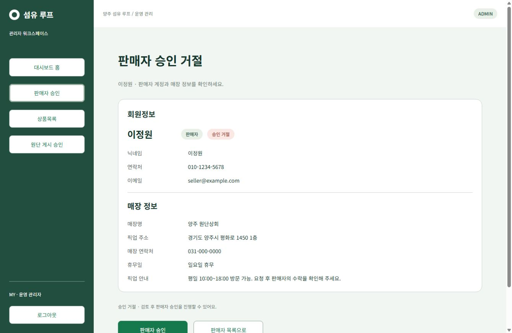
조건에 맞는 항목이 없습니다. 검색어나 필터를 바꿔보세요.
유지할 부분도 확인했습니다
이전 관리자 로그아웃 하단 빈 띠는 재현되지 않았습니다. 확인한 데스크톱에서는 버튼 아래 24px의 정상 여백을 두고 하단에 유지됐습니다.
녹색·아이보리 톤, 기본 버튼 높이, 구매자 문의 초안 복구, 검색 조건을 유지하는 상세 복귀, 관리자 거절 사유 검증과 상태 집계 등은 유지할 만합니다.